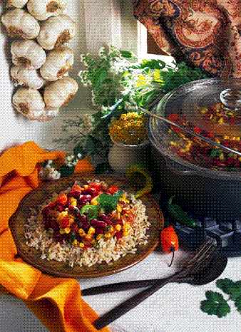
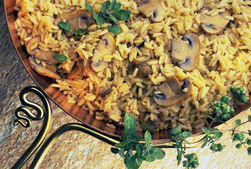
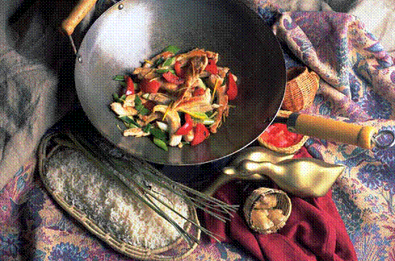
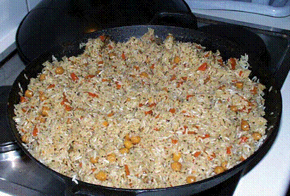
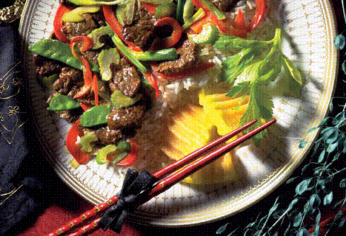
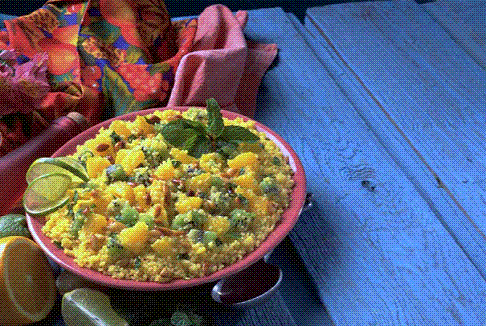

Рецепты плова, разные

Плов с барбарисом и айвой
Рис – 1000 г, баранина – 500 г, морковь – 400 г, сало курдючное – 250 г, айва – 2-3 шт., лук репчатый – 100 г, барбарис – 5 г, соль и перец красный молотый по вкусу.
В разогретый казан или котел кладут курдючное сало и нагревают, пока оно не растопится. Затем кладут в сало нарезанный кольцами лук и жарят до коричневого цвета. После этого добавляют нарезанное небольшими кусочками мясо и поджаривают до появления румяной корочки, после чего добавляют морковь, нарезанную соломкой.
Айву очищают, разрезают на несколько частей, удаляют семена и несколько минут поджаривают вместе с мясом. После этого содержимое казана заливают водой, добавляют барбарис, соль и перец по вкусу и тушат в течение 50 мин на медленном огне.
После этого кладут в казан промытый рис, прибавляют огонь и тушат до тех пор, пока вся вода не испарится. Затем рис аккуратно сдвигают к середине казана, накрывают его крышкой и держат на маленьком огне еще 30 мин.
Перед подачей к столу рис укладывают на большом блюде горкой, а айву и мясо выкладывают по краям.
Плов по-фергански
Рис – 250 г, лук репчатый – 150 г, баранина или телятина – 150 г, морковь – 150 г, сало баранье – 60 г, зелень – 0,5 пучка, соль, перец по вкусу.
Баранье сало растапливают в казане, затем снимают шкварки и нагревают. Нарезанный кольцами лук кладут в растопленное сало и жарят до коричневого цвета, затем добавляют нарезанное кусочками мясо и жарят, пока оно не зарумянится. После этого выкладывают в казан тонко нарезанную морковь и жарят все вместе 5-10 мин.
После этого в казан наливают воду так, чтобы она покрывала его содержимое на 5-7 см. Когда вода закипит, добавляют соль и перец по вкусу, накрывают казан крышкой и тушат на медленном огне 1 ч. Когда мясо будет готово, в казан добавляют промытый рис, укладывая его ровным слоем, добавляют воды так, чтобы она покрывала рис на 2-3 см, прибавляют огонь и тушат до тех пор, пока вода не выкипит. После этого плов сдвигают к середине казана горкой, деревянной палочкой делают лунки в нескольких местах, накрывают плов крышкой и тушат еще 30 мин.
Перед подачей к столу плов выкладывают горкой на большое блюдо и посыпают мелко нарубленной зеленью.
Плов по-бухарски
Баранина – 120 г, рис – 120 г, морковь – 120 г, лук репчатый – 40 г, сало курдючное – 50 г, изюм – 40 г, соль по вкусу.
Баранину, нарезанную крупными кусками, отваривают в подсоленной воде. В бульон кладут рис, а также морковь и репчатый лук, нарезанные соломкой и пассерованные, изюм и варят.
Когда рис будет готов, добавляют растопленное курдючное сало, размешивают и кладут рядами вперемежку с мясом, нарезанным тонкими ломтиками.
Плов хорезмский
Баранина – 120 г, рис – 120 г, морковь – 120 г, лук репчатый – 60 г, жир – 50 г, пряная смесь – 5 г, соль по вкусу.
Мясо нарезают кусками по 60-80 г и обжаривают в жире. Затем добавляют лук и жарят его до золотистого цвета, после чего вливают воду из расчета 1/4 стакана на 1 порцию, дают закипеть, после этого кладут в емкость морковь, нарезанную пластинками шириной 1 см и толщиной 2-3 мм, соль и пряную смесь. Затем доливают воду, чтобы она покрыла содержимое казана, закрывают плотно крышкой и тушат на очень слабом огне 2-3 ч.
После этого в казан выкладывают рис, вновь доливают воду (около 120—150 г на порцию), добавляют соль и специи и продолжают варить еще 30 мин. Готовый плов не размешивают. Перед подачей к столу его выкладывают на блюдо слоями.
Плов раздельный по-самаркандски (сафаки-палов)
Баранина – 170 г, морковь – 150 г, рис – 120 г, лук репчатый – 80 г, масло топленое – 50 г, соль, перец черный и красный молотый.
Промытый рис кладут в казан с подсоленной водой (на 100 г риса – 100 мл воды), отваривают и откидывают на сито. Очищенную морковь отваривают целиком вместе с мясом. Вареное мясо нарезают кусками, морковь – соломкой, добавляют соль, красный и черный молотый перец, все перемешивают. В сильно разогретом топленом масле пассеруют репчатый лук и смешивают его с мясом и морковью.
Перед подачей к столу в тарелку кладут сначала рис, поливают его разогретым маслом, сверху укладывают мясо, морковь, лук, затем поливают оставшимся маслом.
Шавля по-узбекски
Морковь – 150 г, баранина – 100 г, рис – 80 г, томат-пюре – 30 г, масло топленое – 20 г, лук репчатый – 20 г, лук зеленый – 0,5 пучка, соль и перец по вкусу.
Мясо нарезают кусочками, солят, обжаривают в раскаленном масле до образования румяной корочки. Затем добавляют нарезанные соломкой репчатый лук и морковь, томат-пюре и жарят 10 мин. После этого вливают воду из расчета 400 г на 1 порцию, дают закипеть, добавляют соль, перец, промытый рис и варят 1 ч, постоянно помешивая. После этого казан снимают с огня, закрывают крышкой и выдерживают еще 10-15 мин. Перед подачей к столу посыпают шавлю мелко нарезанным зеленым луком.
Плов по-душанбински
Для фарша: баранина – 200 г, сало курдючное – 40 г, лук репчатый – 50 г, яйцо – 1 шт., чеснок – 1 зубчик, соль и перец по вкусу.
Для плова: рис – 200 г, лук репчатый – 100 г, морковь – 80 г, сало топленое – 70 г, зира, барбарис, соль и перец по вкусу.
Мясо нарезают небольшими кусочками и вместе с курдючным салом, репчатым луком и чесноком пропускают через мясорубку. Фарш солят, добавляют перец и тщательно перемешивают. После этого разделывают его на лепешки, на каждую из которых кладут немного сваренного вкрутую и очищенного яйца, заворачивают конвертом и жарят на сковороде с курдючным салом до полуготовности.
В сковороде растапливают жир, кладут в него нарубленный репчатый лук, добавляют нарезанную соломкой морковь и обжаривают. Лук и морковь перекладывают в кастрюлю, заливают водой, сверху раскладывают мясные конверты с яйцом, солят, добавляют перец, зиру, барбарис, промытый рис и тушат на медленном огне. Когда вся вода выкипит, накрывают кастрюлю крышкой и доводят плов до готовности.
Перед подачей к столу выкладывают плов на блюдо, сверху размещают разрезанные на несколько частей мясные конверты, посыпают измельченной зеленью.
К плову можно подать овощной салат.
Плов «Товтарма»
Рис – 120 г, морковь – 120 г, баранина или телятина – 60 г, лук репчатый – 60 г, масло топленое – 60 г, масло растительное – 40 г, пряная смесь – 3 г, соль по вкусу.
Непромытый рис до закладки предварительно жарят в сковороде с топленым маслом до красноватого оттенка. После этого готовят, как обычный плов.
Плов «Утро»
Для лапши: мука пшеничная – 50-60 г, вода – 70 мл, соль по вкусу.
Для плова: баранина – 100 г, лук репчатый – 70 г, морковь – 40 г, сало топленое – 40 г, зелень – 0,5 пучка, зира, барбарис, соль и перец по вкусу.
Баранину нарезают небольшими кусочками, обжаривают в топленом сале и добавляют нарезанный репчатый лук, морковь, нарезанную соломкой, и жарят все в течение 10 мин.
Из муки, воды и соли замешивают тесто. Тонко раскатывают его, нарезают лапшу, немного подсушивают ее и измельчают до размеров рисового зерна. Готовую лапшу добавляют к мясу, заливают водой, кладут в казан барбарис, зиру, перец и варят до готовности.
Перед подачей к столу плов выкладывают на блюдо или большую тарелку, посыпают измельченной зеленью.
Плов из риса и гороха (ивитма-палов)
Баранина – 100 г, морковь – 100 г, рис – 70 г, жир – 50 г, горох – 30 г, лук репчатый – 30 г, анис, барбарис, соль и перец по вкусу.
Рис промывают 4-5 раз в холодной подсоленной воде и после этого заливают горячей водой на 30-40 мин. Горох замачивают на 8-10 ч.
Баранину нарезают кусочками и обжаривают в раскаленном жире до образования румяной корочки, добавляют нарезанный кольцами репчатый лук, нарезанную мелкими кубиками морковь и продолжают жарить еще 10-15 мин. Когда морковь и лук поджарятся, вливают горячую воду, кладут замоченный и промытый горох, специи и варят 20-25 мин.
Готовый зирвак солят и ровным слоем засыпают рис. Затем добавляют воду в количестве, равном весу набухшего риса. Как только рис впитает воду, казан плотно накрывают крышкой и доводят плов до готовности на медленном огне в течение 20-25 мин.
Плов с пшеницей
Пшеница – 120 г, морковь – 120 г, баранина – 60 г, лук репчатый – 60 г, жир – 50 г, пряная смесь – 3 г, соль по вкусу.
Баранину режут кусочками, солят и жарят в растопленном жире до образования румяной корочки. После этого добавляют нарезанный кольцами лук, морковь, пряную смесь и жарят все в течение 10 мин.
Пшеницу толкут в деревянной ступке, смачивая водой так, чтобы отделилась шелуха, потом промывают, очищают от шелухи и замачивают на 3 ч в теплой воде, после чего засыпают в подготовленный зирвак вместо риса. Казан накрывают крышкой и доводят плов до готовности.
Плов с айвой
Рис – 120 г, мясо – 100 г, айва – 80 г, морковь – 50 г, лук репчатый – 40 г, жир – 40 г, пряная смесь – 3 г, куркума на кончике ножа, соль.
Мясо режут небольшими кусочками, кладут в разогретый жир и слегка обжаривают. После этого добавляют нарезанную соломкой морковь, измельченный лук, пряную смесь, куркуму и жарят еще 10-15 мин.
Айву тщательно моют и разрезают на четвертинки, удаляют сердцевину, кладут в готовый зирвак вместе с куркумой перед закладкой риса и тушат несколько минут. После этого в казан ровным слоем выкладывают рис и тушат до готовности.
Плов с урюком
Рис – 120 г, урюк – 80 г, говядина – 60 г, жир – 50 г, морковь – 40 г, пряная смесь – 3 г, соль.
Говядину режут кусочками и обжаривают в раскаленном жире до образования румяной корочки. Затем добавляют измельченную морковь и жарят все вместе еще 10 мин. После этого в казан доливают воду и доводят до кипения. Урюк тщательно промывают несколько раз в холодной воде и добавляют в зирвак. При этом урюк кладут ровным слоем, не перемешивая
с мясом. На урюк выкладывают рис, добавляют пряную смесь и тушат на медленном огне, пока вода не выкипит.
Плов кабили
Рис – 1000 г, мясо – 1000 г, морковь – 300 г, лук репчатый – 300 г, изюм – 200 г, масло растительное – 100 мл, тмин, соль и перец по вкусу.
Для приготовления этого блюда лучше всего использовать длинный пакистанский рис.
Морковь и репчатый лук обжаривают в растительном масле до красноватого цвета. Затем кладут нарезанное кусочками мясо, заливают водой и солят. Отдельно отваривают в подсоленной воде рис. Когда он будет почти готов, добавляют мясо с луком и морковью, изюм, перец и тмин и тушат на медленном огне 15-20 мин.
Палау по-казахски
Баранина – 200 г, масло сливочное топленое – 300 г, рис – 200 г, морковь – 150 г, лук репчатый – 150 г, изюм – 60 г, соль и перец по вкусу.
Мясо очищают от пленок, промывают, нарезают порционными кусками, солят и добавляют перец. В казане нагревают топленое масло, кладут мясо и жарят, пока оно не зарумянится. Очищенную и вымытую морковь нарезают соломкой или натирают на крупной терке. Репчатый лук также очищают и нарезают кольцами. Затем морковь и лук соединяют с мясом и обжаривают.
Рис перебирают, промывают в нескольких водах и делят на две части. Одну из них укладывают ровным слоем на мясо, сверху располагают перебранный и промытый изюм. После этого выкладывают в середину казана горкой, доливают воду, делают деревянной палочкой несколько проколов, накрывают казан крышкой и доводят до готовности на медленном огне.
Перед подачей к столу плов осторожно перемешивают снизу вверх.
Палау «Алпамыс»
Баранина – 100 г, сало баранье – 40 г, лук репчатый – 60 г, морковь – 80 г, рис – 100 г, паста томатная – 10 г, зелень рубленая – 20 г, лист лавровый, соль и перец по вкусу.
Мясо очищают, нарезают кусочками и обжаривают до образования румяной корочки, после чего добавляют натертую на крупной терке морковь и жарят еще несколько минут.
Отдельно в кастрюле растапливают нарезанное кусочками баранье сало и обжаривают в нем измельченный репчатый лук.
Рис перебирают, промывают и кладут в казан с мясом и морковью. Туда же добавляют обжаренный в сале лук, томатную пасту, солят, перчат. Вливают немного воды, накрывают казан крышкой и ставят на медленный огонь. Примерно за 5 мин до готовности кладут в казан лавровый лист.
Перед подачей к столу плов осторожно перемешивают снизу вверх и посыпают рубленой зеленью.
Плов с бараниной или свининой
Рис – 100 г, вода или бульон – 200 мл, баранина или свинина – 120 г, сало курдючное, или свиное топленое, или масло топленое – 30 г, томат-пюре – 30 г, лук репчатый – 30 г, соль и перец по вкусу.
Мякоть баранины или свинины нарезают кусочками весом по 30-50 г, баранью грудинку рубят вместе с костью. Подготовленное мясо посыпают солью, перцем и обжаривают на курдючном, свином топленом сале или топленом масле до образования поджаристой корочки.
Обжаренное мясо кладут в глубокий сотейник, добавляют томат-пюре, заливают горячей водой или бульоном и дают закипеть. В воду с мясом засыпают промытый рис, добавляют cпассерованный лук и варят до загустения, изредка аккуратно помешивая, чтобы не помять рис. После этого сотейник закрывают крышкой и ставят в жарочный шкаф на 40-50 мин.
Этот плов можно готовить и без томата-пюре.
Плов с вареной бараниной
Вода или бульон – 200 мл, баранина – 120 г, рис – 100 г, лук репчатый – 25 г, сало курдючное – 20 г, зелень петрушки или укропа – 1 пучок, соль.
Баранину варят большим куском до готовности, нарезают ломтиками или кубиками весом 5-7 г. Полученный при варке бульон процеживают, добавляют соль, сало курдючное, слегка поджаренный лук, доводят до кипения, засыпают промытый рис и варят его, как вязкую кашу. В горячий рис кладут кусочки горячей вареной баранины и хорошо перемешивают.
Перед подачей к столу плов посыпают измельченной зеленью петрушки.
Плов с мясными фрикадельками (гелак-палав)
Для фарша: баранина – 200 г, лук репчатый – 120 г, чеснок – 20 г, соль, перец черный и красный молотый по вкусу.
Для плова: рис – 200 г, морковь – 50 г, лук репчатый – 50 г, сало баранье – 40 г, барбарис, зира, зелень, соль и перец по вкусу.
Баранину очищают от пленок, моют, пропускают через мясорубку вместе с репчатым луком и чесноком. Добавляют красный и черный молотый перец, солят и хорошо перемешивают фарш.
Лук рубят, морковь натирают на крупной терке. На сковороде растапливают баранье сало, кладут в него лук и морковь и слегка обжаривают. Формуют из фарша фрикадельки, кладут их в сковороду с луком и морковью, заливают водой и тушат примерно 15 мин.
Полученную смесь перекладывают в кастрюлю, солят, всыпают предварительно перебранный и промытый рис, зиру, барбарис и доводят до готовности. Подавая к столу, плов выкладывают горкой на блюдо, сверху располагают фрикадельки и посыпают измельченной зеленью.
Плов с бараниной и лапшой
Рис – 80 г, лапша – 50 г, баранина – 100 г, масло топленое – 20 г, лук репчатый – 15 г, зелень, соль по вкусу.
Баранину нарезают порционными кусками, солят, обжаривают в масле и тушат с добавлением пассерованного репчатого лука. Рис и лапшу отваривают по отдельности в подсоленной воде, затем смешивают их и заправляют топленым маслом.
Перед подачей к столу готовую баранину кладут на рис и лапшу и посыпают зеленью.
Батта по-киргизски
Рис – 150 г, говядина – 100 г, вода – 50 мл, редька – 25 г, лук репчатый – 30 г, масло сливочное – 30 г, томат-пюре – 20 г, соль и перец по вкусу.
Рис перебирают, промывают и слегка обжаривают на сливочном масле. Говядину очищают от пленок и жил, нарезают кусочками и жарят до образования румяной корочки.
После этого добавляют нарезанный кольцами репчатый лук, натертую на терке редьку, соль и перец по вкусу и жарят 5 мин. Кладут в кастрюлю томат-пюре, вливают воду и доводят плов до готовности.
Перед подачей к столу плов выкладывают на широкое блюдо.
Плов с курдючным салом
Рис – 120 г, баранина – 120 г, морковь – 120 г, сало курдючное – 50 г, лук репчатый – 35 г, изюм – 40 г, соль.
Баранину варят крупным куском до полной готовности. Бульон процеживают, солят по вкусу, засыпают в него хорошо промытый рис, добавляют нарезанные соломкой и поджаренные морковь и репчатый лук, очищенный от веточек промытый изюм и варят в закрытой кастрюле 40-45 мин на медленном огне. В сваренный рис вливают горячее сало и перемешивают.
Перед подачей к столу мясо нарезают тонкими ломтиками и кладут его в глубокую тарелку вперемешку с готовым рассыпчатым рисом.
Плов с жареной бараниной
Вода – 250 мл, рис – 150 г, баранина – 120 г, лук репчатый – 60 г, масло сливочное или топленое – 40 г, алыча свежая – 30 г или сушеная – 15 г, шафран, корица, зелень – 0,5 пучка, соль.
Рис, отваренный в подсоленной воде, поливают водным настоем шафрана и заправляют топленым или сливочным маслом.
Баранину нарезают мелкими кусочками по 10-15 г, обжаривают, добавляют пассерованный репчатый лук, вымытую алычу и нарезанную зелень петрушки или сельдерея. Все это тушат в закрытой посуде до готовности мяса.
Перед подачей к столу на блюдо кладут рис, рядом с ним – баранину с соусом, посыпают рис корицей.
Плов с бараниной и овощами
Вода или бульон – 300 мл, баранина – 120 г, бараньи кости – 200 г, рис – 150 г, морковь – 130 г, сало курдючное – 60 г, лук репчатый – 50 г, соль и перец по вкусу.
Рис замачивают в подсоленной воде на 3-4 ч. Мякоть баранины нарезают кусочками по 10-12 г, посыпают солью, перцем и обжаривают в сильно нагретом курдючном сале до образования поджаристой корочки. К обжаренному мясу добавляют нарезанные соломкой репчатый лук и морковь и продолжают жарить.
Затем в мясо с овощами вливают воду или бульон, сваренный из бараньих костей, кладут рис и варят на слабом огне в течение 40-50 мин.
Плов с бараниной и гранатовым соком
Рис – 100 г, баранина – 70 г, сало курдючное или масло топленое – 30 г, лук репчатый – 15 г, сок гранатовый – 30 г, соль и перец по вкусу.
Баранину нарезают мелкими кусочками по 20-30 г, солят, перчат и обжаривают на курдючном сале или топленом масле. После этого кладут мясо в кастрюлю, добавляют репчатый лук и гранатовый сок, немного воды или бульона и тушат до готовности мяса.
Перед подачей к столу на разогретое блюдо или тарелку выкладывают куски баранины с луком и соком, в котором они тушились, а рядом кладут вареный рис, политый топленым маслом или курдючным салом.
Плов с бараниной запеченный
Вода – 200 мл, баранина – 120 г, рис – 100 г, масло топленое или сливочное – 30 г, томат-пюре – 20 г, сыр – 10 г.
Готовят плов и раскладывают его на порционные сковороды так, чтобы куски баранины были полностью покрыты рисом. Поверхность выравнивают, придав ей слегка выпуклую форму, посыпают тертым сыром, поливают топленым или сливочным маслом, добавляют воду и запекают до образования поджаристой корочки. Подают на этих же сковородах.
Если нужно большое количество порций, плов таким же способом запекают на противне, а затем нарезают порционными кусками.
Отдельно можно подать красный соус с мадерой.
Плов с рубленой бараниной и яйцами
Рис – 100 г, баранина – 80 г, яйцо – 1 шт., масло сливочное – 50 г, молоко – 20 мл, лук репчатый – 15 г, соль и перец по вкусу.
Баранину пропускают через мясорубку вместе с репчатым луком, солят, добавляют перец и, помешивая, жарят на сковороде с маслом. Сырое яйцо смешивают с молоком, солят, заливают этой смесью жареное мясо и запекают в жарочном шкафу.
Перед подачей к столу на тарелку кладут запеченное мясо, а рядом – отварной рис, политый растопленным сливочным маслом.
Плов с бараниной или говядиной, запеченный в горшочке
Бульон – 200 мл, баранина или говядина – 120 г, рис – 100 г, лук репчатый – 30 г, сало топленое курдючное или масло топленое – 30 г, томат-пюре – 10 г, сыр – 10 г, лавровый лист, соль и перец по вкусу.
Говядину или баранину нарезают из расчета 2-3 куска на порцию, посыпают солью, перцем и обжаривают в топленом курдючном сале или топленом масле до образования поджаристой корочки. Обжаренное мясо раскладывают в порционные огнеупорные керамические горшочки (если мясо жесткое, то после обжаривания можно потушить его с бульоном 20-30 мин и только после этого разложить в горшочки). Добавляют в горшочек с мясом промытый рис, мелко нарубленный и пассерованный репчатый лук, прокипяченный с томатом-пюре лавровый лист, заливают горячей водой или бульоном, сваренным из мясных костей, закрывают горшочки крышками и ставят их в духовку.
После того как рис впитает всю воду, плов посыпают тертым сыром, поливают топленым маслом или топленым курдючным салом и запекают в жарочном шкафу, не покрывая горшочки крышками, чтобы на поверхности риса образовалась поджаристая корочка. К столу подают в горшочках.
Плов с курицей и алычой
Курица – 150 г, рис – 100 г, алыча сушеная без косточек – 40 г, лук репчатый – 20 г, масло топленое – 20 г, шафран и соль по вкусу.
Курицу отваривают в подсоленной воде. Полученный при этом бульон процеживают и добавляют в него масло, пассерованный репчатый лук и крепкий водный настой шафрана.
Перебранный и промытый рис засыпают в кипящий бульон и варят, как кашу. Перед подачей к столу порционный кусок курицы кладут на блюдо или тарелку, засыпают рассыпчатым рисом, сверху кладут алычу, сваренную в небольшом количестве воды, и поливают отваром от алычи.
Плов из курицы
Курица – 400 г, рис – 200 г, лук репчатый – 100 г, масло топленое – 120 г, морковь – 100 г, зира, барбарис, порошок мяты, зелень – 0,5 пучка, соль и перец по вкусу.
Курицу промывают, разрезают на небольшие кусочки, солят, перчат и обжаривают в топленом сливочном масле. После этого добавляют нарезанный кольцами репчатый лук, натертую на крупной терке морковь и жарят в течение 8-15 мин. Затем добавляют немного воды и тушат еще 10 мин.
Всыпают в емкость с мясом перебранный и промытый рис, специи и варят на медленном огне почти до готовности. Когда рис полностью впитает воду, кастрюлю накрывают крышкой и доводят плов до готовности.
Перед подачей к столу плов выкладывают на блюдо горкой, сверху размещают куски мяса и посыпают плов измельченной зеленью.
Плов с уткой и черносливом
Утка – 800 г, рис – 600 г, чернослив – 300 г, сало топленое – 200 г, морковь – 120 г, лук репчатый – 60 г, зелень, соль и перец по вкусу.
Утку потрошат, тщательно промывают, натирают солью и перцем. Через 10-15 мин рубят утку на порционные куски и жарят на сале до образования румяной корочки.
После этого добавляют в мясо натертую на крупной терке морковь и измельченный репчатый лук, смесь тушат в течение 10 мин.
Затем заливают водой и тушат еще 15 мин. Кладут в казан предварительно замоченный рис, нарезанный небольшими кусочками чернослив и доводят до готовности на медленном огне.
Перед подачей к столу плов выкладывают на блюдо горкой и посыпают рубленой зеленью.
Плов из баранины с пшеном
Баранина – 500 г, пшено – 400 г, морковь – 70 г, лук репчатый – 60 г, жир – 60 г, паста томатная – 10 г, лавровый лист, зелень, соль и перец по вкусу.
Мясо очищают от пленок, моют, нарезают небольшими кусочками и обжаривают в разогретом жире. Затем добавляют измельченный репчатый лук и обжаривают все вместе.
Смесь перекладывают в казан, солят, добавляют перец, натертую на крупной терке морковь, лавровый лист, томатную пасту и тушат. Когда мясо станет мягким, всыпают перебранное и промытое пшено и добавляют немного воды. Казан с пловом ставят на медленный огонь и доводят до готовности.
После того как плов будет готов, посыпают его измельченной зеленью.
Отдельно можно подать овощной салат.
Плов с тушеным филе говядины
Рис – 100 г, говядина – 120 г, лук репчатый – 50 г, масло топленое – 30 г, бульон коричневый – 100 мл, барбарис – 5 г, шафран, корица, гвоздика, соль.
Говядину (вырезку) нарезают порционными кусками (по одному на порцию), обжаривают на топленом масле до образования на поверхности мяса поджаристой корочки. Затем мясо кладут в казанок в один ряд, солят, добавляют нашинкованный и пассерованный репчатый лук, корицу и гвоздику, доливают немного коричневого бульона, накрывают крышкой и тушат до готовности.
Рис отваривают в подсоленной воде, откидывают на сито и поливают водным настоем шафрана, добавляют топленое масло, перемешивают и хорошо прогревают в жарочном шкафу. Плов можно готовить и без шафрана.
Перед подачей к столу кладут на большое блюдо горячий рис, на него – готовое филе, а потом поливают соком, в котором оно тушилось. Отдельно подают молотый барбарис.
Плов со свининой и грибами
Cвинина – 300 г, рис – 300 г, грибы свежие – 200 г, масло топленое сливочное – 60 г, зелень, соль и перец по вкусу.
Мясо очищают от пленок, моют, нарезают небольшими кусочками и обжаривают в топленом масле.
Свежие грибы моют и варят до полуготовности в кипящей подсоленной воде. После этого их измельчают и обжаривают в масле.
Обжаренные грибы и мясо соединяют, добавляют к ним предварительно замоченный рис, кладут сливочное масло, доливают немного воды, солят, перчат и доводят до готовности на среднем огне. Готовый плов посыпают измельченной зеленью.
Плов с курагой
Рис – 400 г, баранина – 300 г, курага – 100 г, жир – 60 г, лук репчатый – 40 г, морковь – 50 г, соль и перец по вкусу.
Мясо моют, нарезают кусочками и обжаривают на разогретом жире. К мясу добавляют нарезанный полукольцами репчатый лук и обжаривают все вместе.
После этого добавляют натертую на крупной терке морковь, солят, добавляют перец, наливают немного воды и тушат 2 ч. В конце второго часа кладут в казан нарезанную кусочками курагу, предварительно замоченный рис и доводят до готовности.
Плов с мозгами
Вода – 300 мл, рис – 150 г, мозги говяжьи или бараньи – 80 г, сметана, молоко или сливки – 40 мл, масло топленое – 30 г, яйцо – 1 шт., коренья, лук репчатый – 50 г, лавровый лист, соль и перец по вкусу.
Мозги варят в подсоленной воде с кореньями, луком, перцем и лавровым листом, затем протирают через сито и смешивают с сырым яйцом, молоком, сметаной или сливками. Этой смесью заливают рассыпчатую рисовую кашу, выложенную на порционную сковороду, и запекают в жарочном шкафу.
Подают на той же сковороде, предварительно полив маслом.
Плов с конской колбасой (казили-палов)
Рис – 400 г, жир – 250 г, казы (конская колбаса домашнего приготовления) – 200 г, морковь – 120 г, лук репчатый – 70 г, барбарис, зира, зелень – 0,5 пучка, соль и перец красный молотый по вкусу.
Конскую колбасу (казы) целиком кладут в кастрюлю, заливают водой и варят на медленном огне примерно 2 ч. После этого в казане растапливают жир, обжаривают в нем измельченный репчатый лук и нарезанную соломкой морковь. Добавляют отваренную казы, наливают немного воды и тушат до готовности моркови.
Примерно за 2 мин до готовности солят и кладут все специи.
Рис перебирают, промывают в нескольких водах и замачивают на 1 ч в подсоленной воде.
Через 1 ч рис кладут в казан на мясо, разравнивают и заливают водой так, чтобы она полностью покрывала рис. Ставят казан на сильный огонь и варят при бурном кипении до полного испарения воды.
Рис собирают горкой посередине казана, который предварительно снимают с огня, накрывают крышкой и оставляют на 30 мин для упревания. Затем вынимают казы из плова, делят ее на две части. Одну из них нарезают мелкими кубиками и смешивают с пловом, другую – ломтиками, которыми украшают плов. Подают с зеленью.
Плов с цыпленком и сушеными фруктами
Цыпленок – 200 г, рис – 100 г, масло топленое – 100 г, абрикосы или чернослив – 30 г, изюм – 10 г, шафран – 0,5 г, соль.
Рис, отваренный в подсоленной воде, заправляют топленым маслом, предварительно окрасив его шафраном. Сушеные фрукты промывают, обжаривают с маслом и припускают в небольшом количестве воды. Подготовленного цыпленка рубят вдоль на две части, после чего жарят на масле до готовности.
Перед подачей к столу на тарелку кладут горячий рис, на него – фрукты вместе с соком, а рядом – половинку цыпленка.
Пилав по-турецки
Грудинка баранья – 800 г, рис – 400 г, изюм мелкий – 200 г, лук репчатый – 200 г, масло сливочное – 200 г, коренья, сахар, соль.
Грудинку отваривают в воде с добавлением кореньев. После этого бульон процеживают и варят в нем рис. Когда рис будет готов, его отбрасывают на сито и обливают холодной водой, чтобы он был рассыпчатым, и дают воде стечь. После этого выкладывают рис на сковороду, добавляют нарезанную кусочками баранину, рубленый лук, соль, немного сахара, обязательно – мелкий изюм и жарят с маслом до готовности лука и подрумянивания риса.
Баранину можно не отваривать, а жарить в сале до готовности.
Этот плов можно готовить также из телятины и птицы, как домашней, так и дикой.
Пилав «Османский»
Баранина – 500 г, лук репчатый – 250 г, рис – 200 г, масло растительное – 100 мл, миндаль очищенный – 80 г, вода или бульон мясной – 70 мл, изюм – 60 г, паста томатная – 30 г, чеснок – 1 долька, зелень укропа – 0,5 пучка, сахар – 20 г, соль и перец по вкусу.
Мясо нарезают кубиками и поджаривают на растительном масле, затем добавляют чеснок, крупно нарубленный лук и мясной бульон или воду, а незадолго до готовности мяса всыпают промытый и просушенный рис. Как только рис набухнет, добавляют томатную пасту, соль, сахар и перец, подливают немного горячей воды и тушат на слабом огне, закрыв крышкой. Время от времени в пилав следует подливать немного горячей воды или бульона.
Как только пилав будет готов, добавляют промытый изюм, миндаль и измельченную зелень. Казан накрывают полотенцем и ставят в теплое место на 15-20 мин.
Куриный пилав
Курица – 1000 г, рис – 400 г, масло растительное или сливочное – 125 г, миндаль – 80 г, изюм – 50 г, зелень – 1 пучок, лист лавровый – 1-2 шт., перец красный острый – 1 шт., гвоздика, порошок карри, соль и перец по вкусу.
Курицу варят до мягкости вместе с крупно нарезанной зеленью и лавровыми листьями. Рис моют, подсушивают и обжаривают в половине указанного количества сливочного или растительного масла. Затем добавляют 4 стакана куриного бульона, соль, перец, порошок карри и изюм и варят на слабом огне 10 мин. После этого казан плотно закрывают крышкой и ставят в теплое место на 10 мин.
Мясо отделяют от костей, нарезают мелкими кусочками и обжаривают в остатках сливочного или растительного масла. Миндаль слегка подрумянивают на сковороде и смешивают с готовым рисом. Добавляют гвоздику и острый перец. Блюдо должно быть очень острым и одновременно сладким.
Плов с голубцами из виноградных листьев (коваток-палов)
Мясо – 500 г, рис – 300 г, жир – 200 г, лук репчатый – 120 г, морковь – 50 г, чеснок – 2-3 дольки, листья виноградные, порошок мяты, зира, соль и перец по вкусу.
Мясо очищают от пленок и разрезают на два одинаковых куска. Из одного куска делают фарш, пропустив его через мясорубку вместе с репчатым луком и чесноком. Затем добавляют в фарш молотый перец, зиру, порошок мяты, соль, хорошо перемешивают. Подготавливают виноградные листья. Для этого срезают с них жесткие черешки, затем промывают в холодной воде и подсушивают салфеткой. На каждый лист кладут немного фарша, заворачивают конвертом, после чего, сложив конверты швом друг к другу, нанизывают их на толстую крепкую нитку.
Второй кусок мяса с костями обжаривают в жире вместе с луком и морковью, заливают водой, солят, кладут специи и тушат на медленном огне. Голубцы отваривают, соединяют их с предварительно перебранным и промытым рисом, наливают воды столько, чтобы она чуть-чуть прикрывала рис, и варят до полного испарения жидкости на сильном огне. После этого накрывают емкость крышкой и оставляют на 20-30 мин.
Перед подачей к столу голубцы вынимают и снимают с них нитки. Плов выкладывают горкой на блюдо, голубцы размещают сверху.
Шилоплов грузинский
Курица – 1000—1500 г, бульон – 1000 мл, рис – 400 г, масло растительное – 200 г, лук репчатый – 90 г, зелень – 1 пучок, соль и перец по вкусу.
Очищенную и выпотрошенную курицу солят и отваривают. Когда она станет мягкой, ее вынимают и разрезают. В оставшийся бульон кладут рис и варят, пока не получится довольно густая каша. После этого добавляют мелко нарубленный и обжаренный в масле лук, перец, хорошо перемешивают и протирают через сито.
Курицу укладывают на блюдо и, подогрев рис, выкладывают его на курицу и посыпают зеленью.
Плов настоящий
Рис крупный – 1500 г, морковь – 1500 г, лук репчатый – 1500 г, баранина (ребрышки и мякоть) – 1000 г, масло растительное – 250 мл, жир курдючный – 200 г, паста томатная – 70 г, изюм – 50 г, кинза – 0,5 пучка, укроп – 0,5 пучка, соль и перец красный молотый по вкусу.
В разогретый сухой казан наливают растительное масло (лучше хлопковое, но можно использовать и подсолнечное рафинированное) и прогревают его на медленном огне 30-45 мин.
В это время подготавливают мясо, лук и морковь: мясо нарезают кубиками, лук – кольцами, морковь – тонкими продольными полосками. Перед тем как заложить мясо, нагрев увеличивают с тем расчетом, чтобы все мясо быстро обжарилось со всех сторон, после чего уменьшают огонь до минимума. После этого кладут лук и, не перемешивая с мясом, тушат 10-15 мин, закрыв крышку, затем сверху (не перемешивая) укладывают морковь, на дно казана очень аккуратно кладут небольшие кусочки курдючного сала, сверху – мелко нарезанную курагу. Казан накрывают крышкой и держат 35 мин на очень слабом огне.
Томатную пасту разводят 1 л кипящей воды и солят по вкусу (лучше сделать это перед закладыванием риса). Рис тщательно промывают, 2 ч выдерживают в холодной воде, затем сливают воду, а рис подсушивают. Перед закладыванием риса мясо перемешивают с морковью, солят и перчат, на мясо кладут изюм.
Желательно, чтобы ребрышки лежали на дне. Теперь засыпают и разравнивают рис (с мясом не перемешивают), закрывают крышкой казан и, увеличив огонь, оставляют на 15 мин. Затем снова уменьшают огонь и очень аккуратно заливают рис водой с растворенной томатной пастой, так чтобы на поверхности риса не образовались ямки, так как в этом случае он не проварится равномерно. После этого добавляют обычную горячую воду, нагретую почти до кипения, так чтобы вода покрывала рис на два пальца. Если воды будет больше, чем нужно, рис разварится.
Плов тушат на среднем огне, пока вода полностью не испарится, затем перемешивают мясо и рис, добавляют измельченную зелень и оставляют на 20 мин доходить на медленном огне. Плов подают к столу слегка остывшим.
Плов с черносливом
Мясо (свинина, говядина, баранина) – 1000 г, рис – 1000 г, морковь – 1000 г, лук репчатый – 500 г, чернослив – 50 г, изюм – 20 г, масло подсолнечное – 50-100 мл, чеснок – 5 крупных зубчиков, соль.
Масло нагревают в 5-7-литровом казане, кладут туда нарезанное средними кусками мясо, обильно солят и жарят на сильном огне до образования румяной корочки. Добавляют нарезанный кольцами лук и обжаривают его до подрумянивания, после чего кладут нарезанную соломкой морковь, равномерно распределяют по поверхности мяса, доливают примерно 0,5 стакана воды, убавляют огонь до минимума, накрывают казан крышкой и до конца приготовления плова больше не перемешивают.
Когда морковь будет готова (примерно через 40 мин), всыпают промытый рис и равномерно распределяют в нем зубчики чеснока, изюм и чернослив. Заливают водой на 2-3 см выше уровня риса (воду следует заливать аккуратно), накрывают крышкой, увеличивают огонь и тушат до готовности (примерно 40 мин). После приготовления плов не перемешивают. К столу подают слегка остывшим.
Плов с бараниной по-азербайджански
Баранина молодая (грудинка) – 200 г, лук репчатый – 150 г, рис – 120 г, сок гранатовый – 80 г, алыча – 80 г, изюм – 30 г, масло сливочное – 30 г, соль по вкусу.
В эмалированную кастрюлю наливают слегка подсоленный кипяток, засыпают в него рис и варят до полуготовности, все время снимая с поверхности воды пену. Когда зерна риса будут еще немного твердыми, откидывают рис на сито и промывают холодной кипяченой водой.
Баранину нарезают небольшими кусочками с косточками, солят, обжаривают на сковороде на большом огне в собственном жире с добавлением сливочного масла. После этого перекладывают мясо в казанок с толстыми стенками, добавляют нарезанный крупными кубиками репчатый лук, сок граната, изюм, алычу, очищенную от косточек, кипяток (50-60 г на порцию) и тушат на небольшом огне под крышкой 30-45 мин (или выдерживают в духовке).
К плову можно подать зеленый лук, молодой чеснок, мяту, кресс-салат. Состав основной части плова можно изменить: жарить баранину только с репчатым луком, чесноком и пряными травами или добавить к плову обжаренную тыкву и каштаны.
Плов али-мусамба
Баранина – 250 г, рис – 150 г, бульон – 100 мл, лук репчатый – 50 г, чернослив – 40 г, масло топленое – 20 г, корица, шафран, соль и перец по вкусу.
Для лаваша: мука – 50 г, яйцо – 1 шт.
Баранину нарезают порционными кусками, солят, перчат и обжаривают на сковороде в масле.
Затем подливают бульон, добавляют пассерованный репчатый лук, промытый чернослив, настой шафрана, корицу и тушат до готовности. Отваривают рис, часть его окрашивают настоем шафрана.
Из муки и яйца замешивают тесто и выпекают лаваш.
Перед подачей к столу на тарелку горкой укладывают рис, сверху посыпают окрашенным рисом, сбоку раскладывают баранину с фруктами и соусом, поливают маслом и посыпают корицей.
Лаваш подают отдельно.
Аришта-плов
Баранина – 200 г, бульон – 100 мл, рис – 100 г, лук репчатый – 30 г, масло топленое – 30 г, соль.
Для аришты: мука – 30 г, яйцо – 1 шт., соль.
Баранину нарезают порционными кусками, солят, обжаривают на сковороде в масле, добавляют пассерованный репчатый лук, бульон и тушат до готовности.
Из муки, воды и яйца с добавлением соли замешивают крутое тесто для лапши (аришты), слегка подсушивают и нарезают соломкой. Затем отваривают ее в подсоленной воде и откидывают на сито.
Рис отваривают, смешивают его с лапшой и поливают маслом. Перед подачей к столу на тарелку выкладывают плов, сверху раскладывают баранину и поливают еще раз маслом.
Чихиртма-плов
Молоко – 150 мл, рис – 100 г, баранина – 70 г, масло топленое или сливочное – 30 г, лук репчатый – 30 г, яйцо – 1 шт., кислота лимонная – 0,1 г, корица – 0,1 г, шафран – 0,1 г, укроп – 0,5 пучка, соль по вкусу.
Промытый и отваренный в подсоленной воде рис делят на две равные части, затем одну из них окрашивают водным настоем шафрана. Соединяют обе части риса, поливают топленым или сливочным маслом и перемешивают.
Баранину, нарезанную кусочками по 15-20 г, солят, жарят на топленом масле до готовности, затем добавляют пассерованный репчатый лук, растворенную в воде лимонную кислоту, корицу в порошке, перемешивают, кладут на порционную сковороду, заливают сырым яйцом, смешанным с молоком и мелко нарезанным укропом.
Подают баранину на той же сковороде, на которой ее запекали, а рис подают отдельно.
Плов лоби-чилов
Баранина – 250 г, рис – 100 г, фасоль белая – 50 г, лук репчатый – 100 г, бульон – 100 мл, масло топленое – 50 г, изюм – 40 г, шафран – 0,1 г, корица – 0,2 г, соль и перец по вкусу.
Для лаваша: мука – 50 г, яйцо – 1 шт.
Баранину (лучше всего корейку) нарезают по 2-3 куска на порцию, обжаривают на сковороде в масле с добавлением репчатого лука, заливают бульоном, солят, добавляют перец, настой шафрана и тушат до готовности.
Предварительно замоченный рис варят в подсоленной воде до полуготовности и откидывают на сито. Отдельно варят фасоль, затем смешивают ее с рисом.
Из муки и яйца замешивают тесто и пекут лаваш, затем кладут его на дно кастрюли или казана, добавляют масло, настой шафрана, доводят до кипения и укладывают слой риса для образования корочки – казмага. После этого закладывают смесь риса и фасоли, сверху поливают настоем шафрана и маслом, закрывают крышкой, ставят на слабый огонь и доводят до готовности. Отдельно на масле припускают изюм.
Перед подачей к столу на тарелку выкладывают горкой рис с фасолью, а по бокам помещают готовое мясо, казмаг, припущенный изюм. Сверху поливают маслом и посыпают корицей.
Плов с каурмой
Баранина – 250 г, рис – 150 г, бульон – 100 мл, лук репчатый – 70 г, масло топленое – 50 г, алыча свежая – 30 г (или сушеная – 15 г), корица – 0,2 г, шафран – 0,1 г, зелень – 0,5 пучка, соль и перец по вкусу (для замачивания и варки риса соль берут из расчета 50 г на 1 кг риса).
Для лаваша: мука – 50 г, яйцо – 1 шт.
Мякоть баранины нарезают кусочками по 35-40 г, солят, добавляют перец, обжаривают и тушат с бульоном. Затем добавляют рубленый лук, промытую алычу и доводят мясо до готовности.
Из муки и яйца замешивают крутое тесто, раскатывают из него круглую лепешку толщиной 1 мм и выпекают на сковороде без масла. Рис перебирают и замачивают на несколько часов в холодной воде, поместив в нее марлевый мешочек с солью. Затем рис промывают теплой водой, кладут в кипящую подсоленную воду (на 1 кг риса – 6 л воды), варят до полуготовности и откидывают на сито. На дно кастрюли кладут лаваш, засыпают рис, поливают растопленным сливочным маслом и на медленном огне доводят до готовности.
Перед подачей к столу часть риса окрашивают настоем шафрана и выкладывают на тарелку горкой. Сбоку помещают готовое мясо (каурму), а с другой стороны – кусочки рисового казмага, который образуется на дне кастрюли, поливают все маслом и посыпают корицей и измельченной зеленью.
Плов парча-дошамя
Баранина – 300 г, рис – 150 г, бульон – 100 мл, абрикосы или хурма – 75 г, масло топленое – 50 г, изюм – 50 г, каштаны – 50 г, тмин – 0,1 г, лук репчатый – 20 г, корица – 0,2 г, соль, перец.
Для лаваша: мука – 50 г, яйцо – 1 шт.
Баранью грудинку очищают и обжаривают на топленом масле целым куском. Затем отделяют кости, к мясу добавляют перец, солят и тушат до готовности в небольшом количестве бульона с добавлением пассерованного репчатого лука, фруктов, очищенных вареных каштанов и тмина.
Отдельно отваривают рис и откидывают на сито. Из муки и яйца пекут лаваш, кладут его на дно кастрюли, насыпают рис и готовят казмаг.
Перед подачей к столу на тарелку горкой укладывают рис, сверху – баранину, припущенные фрукты, каштаны и казмаг из риса. Плов поливают маслом и посыпают корицей.
Плов рюза-кюфта
Баранина – 200 г, лук репчатый – 100 г, рис – 150 г, масло топленое – 50 г, сахар – 5 г, уксус (3%-ный) – 10 мл, томат-пюре – 10 г, бульон – 100 мл, шафран – 0,1 г, зелень – 5 г, соль и перец по вкусу.
Мякоть баранины вместе с луком пропускают через мясорубку, добавляют соль и перец, тщательно перемешивают и ставят фарш на непродолжительное время в холодное место. Затем формуют из него небольшие шарики весом 20-30 г каждый и обжаривают их на раскаленной сковороде с маслом.
Отдельно жарят нашинкованный репчатый лук, затем добавляют к нему томат-пюре, бульон, уксус, сахар, соль, перец и доводят соус до готовности. Обжаренные мясные шарики (риза-кюфта) заливают соусом и тушат 8-10 мин.
Отваривают рис и часть его окрашивают настоем шафрана. Перед подачей к столу рис кладут на тарелку горкой, сверху посыпают окрашенным рисом, сбоку укладывают риза-кюфта с соусом, поливают маслом и посыпают рубленой зеленью.
Шам-кебаб плов
Рис – 150 г, баранина – 100 г, лук репчатый – 25 г, масло топленое – 40 г, мацони – 25 г, яйцо – 1 шт., корица – 0,1 г, соль и перец по вкусу.
Мякоть баранины пропускают через мясорубку, обжаривают фарш на масле с добавлением измельченного лука, заправляют взбитым яйцом, солят, добавляют перец и запекают в духовке. Отдельно отваривают рис.
Перед подачей к столу рис укладывают на тарелку горкой, сверху располагают фарш, поливают маслом. Отдельно подают мацони, смешанное с толченой корицей.
Плов сабза-каурма
Баранина – 200 г, рис – 150 г, бульон – 100 мл, масло топленое – 50 г, лук репчатый – 50 г, кислота лимонная – 0,3 г (или абгора – 10 г), зелень (укроп, кинза) – 0,5 пучка, корица – 0,2 г, шафран – 0,1 г, соль и перец по вкусу.
Мякоть баранины нарезают кусочками весом 35-40 г, солят, добавляют перец и обжаривают в топленом масле на раскаленной сковороде. Затем добавляют лимонную кислоту или абгору (сок недозревшего винограда), пассерованный репчатый лук, шафран, измельченную зелень и тушат в бульоне до готовности.
Отдельно отваривают рис, часть его окрашивают настоем шафрана. Перед подачей к столу на тарелку горкой укладывают рис, сверху посыпают окрашенным рисом, сбоку укладывают сабзу-каурму, поливают маслом и посыпают корицей.
Плов праздничный (байрам-палов)
Рис – 1000 г, мясо – 800 г, жир – 300 г, морковь – 120 г, лук репчатый – 100 г, горох – 100 г, чеснок – 70 г, изюм – 30 г, зерна граната – 30 г, айва – 4 шт., яйцо – 2 шт., соль и перец по вкусу.
Мясо очищают от пленок, промывают в холодной воде, подсушивают салфеткой и жарят в жире до образования румяной корочки. Морковь чистят, моют, натирают на крупной терке и обжаривают вместе с мясом. Добавляют в мясо лук и также обжаривают.
К мясу и моркови добавляют очищенную и разрезанную пополам айву, дольки чеснока целиком, предварительно замоченный горох, заливают водой и варят на медленном огне, пока горох не размягчится. Затем солят, добавляют перец, всыпают промытый рис, доливают воду и варят на сильном огне до тех пор, пока не испарится вся жидкость. После этого кладут в казан промытый изюм, накрывают крышкой и держат на очень слабом огне 20-25 мин.
Варят в отдельной емкости яйца вкрутую, одну морковь целиком. Из плова вынимают айву и чеснок, а плов выкладывают на блюдо и украшают по краям красиво нарезанными вареными яйцами, морковью, чесноком, айвой, зернами граната.
Плов тас-кебаб
Рис – 150 г, говядина (вырезка) – 200 г, бульон – 100 мл, масло топленое – 40 г, лук репчатый – 60 г, гвоздика – 0,2 г, корица – 0,2 г, сумах (сушеный молотый барбарис) – 5 г, соль.
Говядину очищают, нарезают ломтиками, солят, слегка обжаривают на раскаленной сковороде в масле, затем кладут слоями в кастрюлю вперемежку со пассерованным репчатым луком, корицей и гвоздикой, вливают бульон и тушат до готовности под крышкой.
Отдельно отваривают рис. Перед подачей к столу на тарелку горкой укладывают рис, сверху располагают готовое мясо и поливают соусом, образовавшимся при тушении. Отдельно подают сушеный молотый барбарис.
Плов с цыпленком
Цыпленок – 500—700 г, рис – 300 г, алыча – 200 г, сок гранатовый – 200 г, молоко – 100 г, каштаны – 100 г, масло сливочное – 100 г, лук репчатый – 50 г, орех миндальный – 20 г, корица – 5 г, чеснок – 2 зубчика, соль и перец по вкусу.
До половины кастрюли наливают кипяток. Сверху кастрюли завязывают салфетку из неплотного полотна или бязи, так чтобы она слегка прогибалась.
В салфетку засыпают промытый рис, кладут сверху сливочное масло, закрывают крышкой или опрокинутой тарелкой и ставят кастрюлю на сильный огонь. По мере испарения воды доливают кипяток в кастрюлю, не снимая салфетки.
Каштаны прокаливают в духовке, уложив на противень, затем ошпаривают их кипятком, очищают от скорлупы и варят в молоке на очень медленном огне. Можно отварить каштаны и в воде, но в этом случае после прокаливания нужно сделать сверху в скорлупе крестообразный надрез, варить течение 5-7 мин, затем слить воду, снять скорлупу и варить в небольшом количестве воды на медленном огне еще 20-25 мин.
Сваренные каштаны слегка обжаривают в масле вместе с репчатым луком, алычой, рубленым миндалем, потом немного солят и добавляют измельченный чеснок.
Цыпленка натирают изнутри смесью соли, корицы и перца, плотно начиняют алычово-каштановой смесью, зашивают и обжаривают на вертеле, поливая гранатовым соком. Готового цыпленка делят на порции, начинку выкладывают отдельно, поливают все гранатовым соком. Рис подают отдельно.
К плову можно подать лук-порей, молодую зелень чеснока, кресс-салат, эстрагон, мяту.
Чыгыртма
Баранина или мясо курицы – 200 г, рис – 100 г, бульон – 100 мл, яйцо – 2 шт., лук репчатый – 70 г, масло топленое – 30 г, кислота лимонная – 0,5 г, шафран – 0,1 г, корица – 0,2 г, укроп – 0,5 г, соль и перец по вкусу.
Баранину или курицу рубят на куски весом 35-45 г, солят, добавляют перец и обжаривают в масле на сковороде. Добавляют бульон, пассерованный репчатый лук, лимонную кислоту, настой шафрана и доводят до готовности. Затем заливают мясо взбитыми яйцами с измельченным укропом и запекают в духовке.
Рис варят и откидывают на сито, часть его окрашивают настоем шафрана. Перед подачей к столу на тарелку выкладывают горкой рис, поверх окрашенного риса кладут чыгыртму, поливают маслом и посыпают корицей и укропом.
Плов-лапша по-адыгейски (тхачупханх)
Мясо цыпленка – 200 г, рис – 100 г, масло топленое – 40 г, масло сливочное – 15 г, изюм – 20 г, абрикосы сушеные – 20 г, шафран – 0,1 г, соль по вкусу.
Для лапши: мука – 250 г, вода – 50 мл, яйцо – 2 шт., соль.
Для приготовления лапши замешивают тесто из муки, соли, яиц и воды. Затем раскатывают тонкую лепешку, нарезают лапшу и кладут в небольшое количество кипящей воды, чтобы вода полностью впиталась. Добавляют сливочное масло и варят до готовности на слабом огне.
Мясо жарят в топленом масле, затем добавляют изюм и абрикосы. Рис отваривают, половину окрашивают шафраном.
Перед подачей к столу на тарелку выкладывают плов, а сверху – лапшу.
Можно готовить плов-лапшу с сахаром.
Плов казанский
Мясо вареное – 200 г, бульон – 100 мл, рис – 70 г, морковь – 50 г, масло топленое или сало – 30 г, лук репчатый – 30 г, изюм – 20 г, соль и перец по вкусу.
Рис перебирают, промывают несколько раз в горячей воде и варят до полуготовности. В кастрюле (котле, казане) растапливают масло или сало, кладут туда нарезанное небольшими кубиками или брусочками вареное мясо (баранину, говядину, молодую конину), на него – кружочки моркови и репчатого лука.
На овощи кладут сваренный до полуготовности рис, вливают бульон и, не перемешивая, солят, добавляют перец, ставят на 1-1,5 ч на слабый огонь в закрытой емкости. Готовый плов выкладывают на большое блюдо или подают каждому в отдельной тарелке. Перед подачей к столу добавляют в плов распаренный в кипятке изюм.
Плов с бараниной, чесноком и базиликом
Рис – 100 г, бульон – 100 мл, баранина – 70 г, масло сливочное – 30 г, сало курдючное или масло топленое – 30 г, лук репчатый – 25 г, базилик – 0,5 пучка, чеснок – 2-3 дольки, соль по вкусу.
Баранину нарезают кусочками по 20-30 г и обжаривают на курдючном сале или топленом масле. Затем кладут мясо в казан, добавляют репчатый лук, базилик, воду или бульон, соль и тушат при закрытой крышке. За несколько минут до готовности в плов добавляют мелко нарезанный чеснок.
Перед подачей к столу на тарелку кладут куски баранины с луком и соком, в котором они тушились, а рядом – рассыпчатую рисовую кашу, политую растопленным сливочным маслом.
Плов с сухофруктами
Баранина – 200 г, рис – 100 г, курага – 100 г, масло сливочное – 80 г, чернослив – 50 г, изюм – 40 г, яйцо – 1 шт., сахар – 10 г, соль по вкусу.
Мякоть баранины нарезают кусочками, солят и обжаривают на слабом огне. Сушеные фрукты (изюм, курагу, чернослив) перебирают, тщательно промывают в горячей воде, откидывают на сито, кладут в разогретую с маслом сковороду и, помешивая, хорошо прогревают. Добавляют сахар, обжаренную баранину, немного воды и все вместе тушат.
Рис варят до полуготовности в слегка подсоленной воде и откидывают на сито. Когда вода стечет, заправляют рис сливочным маслом, взбитым яйцом и делят на три части. В кастрюлю с растопленным маслом кладут одну часть риса, сверху – сухофрукты с мясом, снова рис, потом сухофрукты с мясом и опять рис. Кастрюлю ставят на водяную баню и доводят плов до готовности.
Свадебный плов (туй-палов)
Мясо – 200 г, рис – 100 г, горох – 80 г, масло хлопковое – 80 г, морковь – 70 г, вода 50-100 мл, лук репчатый – 50 г, зарчава – 5 г, перец черный горошком – 2 шт., сахар – 5 г, соль и специи по вкусу.
Этот плов нужно готовить на костре.
Рис перебирают и промывают в нескольких водах. После этого замачивают его в холодной воде вместе с зарчавой (пищевой краситель золотисто-желтого цвета, который получают из корней тропического дерева).
Морковь чистят, моют и режут крупной соломкой, репчатый лук – кольцами. Мясо моют и нарезают крупными кусками.
Хлопковое масло выливают в казан и раскаляют до появления дымка. После этого опускают в масло куски мяса, репчатый лук и жарят до появления румяной корочки. Добавляют морковь, предварительно замоченный горох, черный перец горошком и специи, вливают воду и варят в течение 1 ч.
Когда горох размягчится, солят и добавляют сахар, всыпают рис. Убавляют немного огонь, положив в костер мелко нарубленные дрова. Варят плов до готовности риса. После этого собирают рис горкой в середине казана, накрывают крышкой и оставляют на 30-40 мин.
Перед подачей к столу вынимают из плова мясо, нарезают его маленькими кусочками. Рис выкладывают на большое блюдо, а сверху размещают мясо.
Плов с помидорами
Баранина – 100 г, рис – 80 г, масло сливочное – 70 г, лук репчатый – 20 г, помидоры – 3 шт., зелень – 0,5 пучка, соль по вкусу.
Баранину нарезают кусочками по 15-20 г, солят, обжаривают и тушат с добавлением пассерованного репчатого лука и очищенных от кожицы и нарезанных помидоров.
Рис варят в подсоленной воде до готовности, затем заправляют сливочным маслом.
Перед подачей к столу готовую баранину кладут на рис и посыпают измельченной зеленью.
Плов с курицей, алычой и черносливом
Мясо курицы – 200 г, рис – 100 г, чернослив – 50 г, лук репчатый – 20 г, алыча сушеная без косточек – 40 г, масло топленое – 20 г, шафран, соль по вкусу.
Мясо курицы отваривают в подсоленной воде, полученный бульон процеживают, добавляют в него масло, пассерованный репчатый лук, крепкий водный настой шафрана, промытый рис и варят, накрыв крышкой. Когда плов будет почти готов, добавляют чернослив.
Перед подачей к столу кусок курицы кладут на тарелку, засыпают рисом, а сверху располагают алычу, сваренную в небольшом количестве воды, и поливают отваром от алычи.
Плов с тушеным филе говядины
Бульон – 200 мл, говядина – 120 г, рис – 100 г, лук репчатый – 30 г, масло топленое – 70 г, шафран, корица, гвоздика, соль по вкусу.
Говяжью вырезку нарезают порционными кусками, солят и жарят на топленом масле до образования румяной корочки. Затем мясо укладывают в сотейник в один ряд, добавляют нашинкованный пассерованный репчатый лук, корицу (палочкой), гвоздику, подливают бульон, закрывают крышкой и тушат до готовности.
Рис отваривают в подсоленной воде, откидывают на сито и дают стечь воде, после чего окрашивают рис водным настоем шафрана, добавляют топленое масло, перемешивают и хорошо прогревают в духовке.
Перед подачей к столу кладут на тарелку горячий рис, сверху располагают готовое мясо и поливают соком, в котором оно тушилось.
Плов из курицы с гранатовым соком
Бульон – 150 мл, мясо курицы – 200 г, рис – 70 г, морковь – 40 г, масло топленое – 30 г, лук репчатый – 30 г, сок гранатовый – 30 г, соль и перец по вкусу.
Мясо курицы режут кусочками весом по 30-40 г, обжаривают на сковороде в топленом масле, выкладывают в емкость, в которой будет готовиться плов, смешивают с предварительно пассерованными луком и морковью, заливают бульоном, добавляют гранатовый сок, соль, перец и кипятят.
В полученный бульон засыпают перебранный и промытый рис и варят до готовности.
Плов с цыпленком, сухофруктами и барбарисом
Бульон – 200 мл, цыпленок – 300 г, рис – 100 г, масло топленое – 50 г, чернослив – 30 г, изюм – 10 г, барбарис – 5 г, шафран, соль по вкусу.
Отваренный в подсоленной воде рис заправляют топленым маслом, предварительно окрасив водным раствором шафрана. Сухофрукты промывают, обжаривают с маслом и припускают в закрытой емкости с добавлением бульона.
Подготовленного цыпленка рубят вдоль на две половины, солят и жарят в масле до готовности.
Перед подачей к столу на тарелку кладут горячий рис, сверху располагают сухофрукты вместе с соком, а рядом – половинки цыпленка.
Плов из гусиных потрохов
Потроха гусиные – 150 г, морковь – 50 г, корень петрушки – 30 г, корень сельдерея – 15 г, рис – 130 г, лук репчатый – 10 г, жир гусиный – 40 г, грибы свежие – 40 г, зелень петрушки, соль и перец по вкусу.
Гусиные потроха нарезают небольшими кусочками, заливают холодной водой, доводят до кипения, солят и варят до полуготовности.
Морковь, корень петрушки и сельдерея нарезают кусочками и соединяют с потрохами. Мелко нарезанный репчатый лук обжаривают на жире в кастрюле с толстым дном, добавляют нарезанные свежие грибы, жарят в течение 5-10 мин, кладут мелко нарубленную зелень петрушки, тщательно промытый рис и потроха с овощами. Все хорошо перемешивают, прогревают 2-3 мин, вливают бульон, в котором варились потроха, солят, доводят до кипения, перемешивают и тушат 30-40 мин на умеренном огне в кастрюле с закрытой крышкой.
Когда рис будет готов, осторожно перемешивают плов вилкой и посыпают перцем.
Плов традиционный
Баранина – 500 г, рис – 200 г, морковь – 200 г, лук репчатый – 100 г, жир бараний – 50 г, горох – 20 г, зира, соль и перец по вкусу.
Горох и рис замачивают в холодной подсоленной воде на 2 ч. Мясо нарезают ломтиками по 10-20 г и жарят в жире до образования румяной корочки. После этого добавляют нарезанные соломкой морковь и лук и жарят все в течение 5 мин. Затем вливают воду в количестве, равном весу набухших в воде гороха и риса; кладут рис, горох, перец, зиру и варят, пока вода не испарится. После этого закрывают казан крышкой и варят плов еще 20 мин. Подают к столу, уложив горкой на блюдо.
Плов из перепелов
Перепела – 1000 г, масло сливочное – 200 г, рис – 100 г, лук репчатый – 20 г, соль.
Перепелов очищают и потрошат, рубят тушки пополам и солят. В неглубокой кастрюле нагревают 100 г сливочного масла, кладут перепелов и слегка обжаривают. После этого добавляют воду, чтобы она покрыла мясо, затем мелко нарезанный репчатый лук, накрывают кастрюлю крышкой и варят до готовности.
В другой кастрюле разогревают оставшееся сливочное масло, всыпают рис и, перемешивая, жарят до розового цвета. Добавляют процеженный бульон, полученный от варки мяса, и варят, перемешивая, до закипания.
Когда рис будет почти готов, кладут мясо, солят по вкусу, ставят в духовку и доводят до готовности, не перемешивая.
Плов с китовым мясом
Мясо китовое – 150 г, рис – 60 г, лук репчатый – 25 г, морковь – 25 г, жир – 20 г, паста томатная – 15 г, лист лавровый – 1 шт., зелень петрушки – 0,5 пучка, перец черный горошком, соль по вкусу.
Китовое мясо нарезают кусочками, солят, обжаривают с обеих сторон, кладут в кастрюлю с толстым дном, заливают горячей водой, добавляют томатную пасту, сваренный до полуготовности рис, мелко нарезанные и обжаренные репчатый лук и морковь, лавровый лист, черный перец горошком и тушат до загустения, осторожно помешивая. После этого ставят в духовку на 30 мин.
Перед подачей к столу посыпают мелко нарезанной зеленью петрушки.
Плов с яйцом и шпиком
Рис – 200 г, сало баранье курдючное или шпик свиной – 40 г, лук репчатый – 25 г, яйцо – 1 шт., зелень – 0,5 пучка, соль и перец по вкусу.
Сырое курдючное сало или свиной шпик нарезают продолговатыми тонкими брусочками, слегка обжаривают на сковороде, затем добавляют нашинкованный лук и, помешивая, жарят, пока он не станет мягким.
Затем к луку с жиром добавляют нарезанное ломтиками сваренное вкрутую яйцо, перемешивают и заправляют смесь солью и перцем.
Перед подачей к столу на тарелку кладут горячую рассыпчатую рисовую кашу, заправленную свиным или бараньим салом, в середине каши делают углубление, заполняют его подготовленной смесью, а сверху посыпают зеленью петрушки или укропа.
Плов из баранины по-венгерски
Баранина – 200 г, бульон или вода – 100 мл, рис – 50 г, жир – 20 г, лук репчатый – 15 г, сок томатный – 20 мл, перец сладкий зеленый – 20 г, сыр тертый – 10 г, чеснок – 2 зубчика, зелень петрушки – 0,5 пучка, соль и перец красный молотый по вкусу.
Баранину нарезают кубиками и тушат с добавлением воды до полуготовности. Затем мясо жарят на жире в течение 5 мин, добавляют мелко нарезанный репчатый лук, толченый чеснок, солят, заливают томатным соком и кладут хорошо промытый рис.
Добавляют мелко нарезанную зелень петрушки, заливают горячим бульоном или водой, посыпают красным молотым перцем, перемешивают и доводят до готовности в разогретой духовке.
Перед подачей к столу посыпают плов тертым сыром, мелко нарезанной зеленью петрушки и обкладывают кружочками зеленого сладкого перца.
Плов по-гречески
Бульон – 250 мл, рис – 125 г, перец красный стручковый – 75 г, сосиски – 75 г, масло сливочное – 40 г, горошек зеленый – 50 г, соль по вкусу.
В кастрюлю с растопленным сливочным маслом кладут промытый и подсушенный рис и жарят, постоянно помешивая. Добавляют нарезанные кружочками сосиски, отварной зеленый горошек, красный стручковый перец, предварительно испеченный, очищенный и нарезанный крупной соломкой.
Хорошо перемешивают, солят, заливают бульоном, закрывают крышкой и ставят на 20-25 мин в духовку.
Плов по-арабски (мак-любе)
Мясо – 200 г, капуста цветная – 80 г (или белокочанная – 60 г), рис – 50 г, масло топленое – 10 г, масло растительное – 10 г, соль и перец по вкусу.
Мясо баранины (говядины) нарезают из расчета два куска на порцию, отбивают, солят, добавляют перец и жарят до образования румяной корочки. Вымытую и нарезанную цветную или белокочанную капусту жарят во фритюре и солят.
Мясо кладут в сотейник, сверху располагают обжаренную капусту и предварительно замоченный в течение 1-2 ч рис, заливают холодной водой, солят, добавляют перец, накрывают крышкой и тушат на слабом огне до готовности. Затем перекладывают плов на раскаленную сковороду с топленым маслом и обжаривают.
Плов с курицей и бараниной по-арабски
Бульон – 200 мл, курица – 150 г, баранина – 50 г, рис – 50 г, горошек зеленый консервированный – 50 г, перец красный маринованный (или лечо) – 40 г, томат-пюре – 70 г, масло растительное – 20 мл, лук репчатый – 20 г, зелень – 0,5 пучка, соль и перец по вкусу.
Перебранный и промытый рис обжаривают с растительным маслом и томатом-пюре. Баранину нарезают мелкими кубиками, обжаривают с томатом-пюре. Курицу рубят из расчета три куска на порцию и обжаривают
с добавлением нашинкованного репчатого лука и томата-пюре.
На порционную сковороду кладут обжаренный рис, баранину и курицу с луком и томатом, заливают бульоном, солят, добавляют перец и тушат на слабом огне. За 10 мин до готовности добавляют зеленый горошек, маринованный перец или лечо. Перед подачей к столу посыпают плов измельченной зеленью.
Плов с цыпленком и свининой
Бульон – 250 мл, рис – 125 г, корейка свиная – 50 г, сосиски – 50 г, ветчина – 50 г, мясо цыпленка – 50 г, помидоры – 50 г, масло сливочное – 40 г, лук репчатый – 25 г, шафран – 0,5 г, соль по вкусу.
Мясо цыпленка и свиную корейку нарезают мелкими кубиками, кладут в кастрюлю с нагретым сливочным маслом и обжаривают. Добавляют нарезанную мелкими кубиками ветчину, сосиски, нарезанные кружочками, репчатый лук. Когда лук подрумянится, добавляют очищенные от кожицы и семян и мелко нарезанные помидоры, шафран и заливают горячей водой. Варят все на слабом огне до готовности мяса, затем кладут хорошо промытый рис, заливают бульоном, солят, перемешивают, доводят до кипения, накрывают кастрюлю крышкой и ставят на 20-25 мин в духовку.
Плов по-египетски
Бульон – 250 мл, рис – 125 г, грибы свежие – 75 г, масло сливочное – 40 г, ветчина – 50 г, печень куриная – 25 г, соль по вкусу.
В кастрюлю с растопленным сливочным маслом кладут промытый и обсушенный рис и обжаривают, помешивая. Добавляют куриную печень, нарезанную ломтиками и тушенную с маслом, ветчину, нарезанную кубиками, и ломтики свежих грибов. Все перемешивают, солят, заливают бульоном, доводят до кипения, закрывают крышкой и ставят на 20-25 мин в духовку.
Плов с печенью
Рис – 100 г, масло сливочное – 70 г, бульон мясной – 200 мл, печень – 75 г, соус томатный или грибной, соль.
Рис перебирают, моют и подсушивают на салфетке, кладут его в неглубокую кастрюлю с разогретым сливочным маслом, солят и жарят до розового цвета. Затем добавляют к рису мясной бульон и ставят на 25 мин в духовку.
Печень нарезают небольшими кусочками, солят и тушат со сливочным маслом до готовности.
Когда рис сварится, добавляют в него немного сливочного масла и выкладывают в жестяную форму (лучше с отверстием посередине), предварительно смазав ее маслом. Печень солят и укладывают поверх риса, слегка придавливая ложкой, чтобы она погрузилась в рис.
Форму ставят на несколько минут в духовку, а затем выкладывают плов на блюдо. Подают его с томатным или грибным соусом.
Плов с языком
Рис – 100 г, язык телячий – 100 г, сыр тертый – 50 г, лук репчатый – 35 г, морковь – 35 г, масло сливочное – 70 г, мука – 10 г, корень петрушки, соль по вкусу.
Телячий язык отваривают с репчатым луком, корнем петрушки и морковью. Затем охлаждают его, очищают от кожи и нарезают небольшими кубиками.
Готовят соус: муку обжаривают на сливочном масле, разводят бульоном, в котором варился язык, до консистенции сметаны. Соус добавляют к языку и перемешивают.
Рис слегка обжаривают в сливочном масле, добавляют процеженный бульон, в котором варился язык, и варят до готовности. Готовый рис солят и осторожно перемешивают, добавив сливочное масло и тертый сыр, затем укладывают в хорошо смазанную сливочным маслом форму с отверстием посередине, сверху кладут язык, ставят на несколько минут в духовку.
Плов выкладывают на блюдо, положив в углубление нарезанный язык.
Плов по-янчжоусски
Крутая рисовая каша – 1500 г, жир свиной – 100 г, свинина – 50 г, окорок копченый – 50 г, грибы белые (размоченные) – 50 г, горошек зеленый консервированный – 50 г, филе куриное – 50 г, ростки бамбука – 30 г, вино или коньяк – 25 мл, соус соевый – 10 г, лук репчатый – 30 г, яйцо – 3 шт., соль.
Куриное филе отваривают, мелко режут и смешивают с нарезанной свининой. Окорок, грибы, ростки бамбука режут кубиками, а репчатый лук – мелкими квадратиками. На сковороде растапливают 50 г свиного жира, вливают взбитые яйца, жарят до образования румяной корочки, затем перекладывают в другую емкость. В разогретую сковороду кладут еще 50 г свиного жира, обжаривают лук и свинину, вливают соевый соус и вино или коньяк, добавляют ростки бамбука, грибы, зеленый горошек и куриное филе. Затем кладут рисовую кашу и обжаренные яйца, хорошо перемешивают, добавляют соль и жарят.
Перед подачей к столу плов перекладывают в большое блюдо.
Плов по-мексикански
Вода – 500 мл, помидоры – 250 г, мясо рубленое – 250 г, рис – 250 г, изюм – 80 г, лук репчатый – 80 г, шпик – 80 г, масло растительное – 60 мл, перец красный острый – 1 шт. (или перец красный молотый – 20 г), чеснок – 1 зубчик, соль.

Рис моют, подсушивают, кладут в кастрюлю, добавляют изюм и 2 столовые ложки растительного масла. Ставят на огонь и тушат до тех пор, пока рис не зарумянится. Лук и чеснок мелко рубят и обжаривают на растительном масле, затем к ним добавляют мясо и мелко нарезанный перец и тушат все в течение 10 мин.
За 2 мин до готовности добавляют помидоры, с которых предварительно удаляют кожицу. Вливают немного воды, мясо солят, смешивают с рисом, выкладывают в огнеупорную емкость, сверху распределяют нарезанный полосками шпик и ставят форму в духовку на слабый огонь. Тушат до готовности риса.
Плов «Бакинский»
Баранина – 1000 г, лук репчатый – 500 г, рис – 400 г, масло сливочное – 100—150 г, изюм – 100 г, настой шафрана – 30 г, алыча свежая – 2-3 шт., гранат – 2 шт., соль по вкусу.
Рис промывают и отваривают. Баранину разделывают и обжаривают на сковороде в собственном жире с добавлением сливочного масла. Все перекладывают в казан, добавляют измельченный лук, сок граната, изюм, алычу, настой шафрана, полстакана кипятка, соль и тушат на среднем огне под крышкой 30-40 мин или выдерживают в духовке.
К плову подают пряную зелень, мяту, кресс-салат. При жарке мяса в него можно добавить кусочки тыквы и каштаны.
Плов «Чимган»
Баранина – 600 г, рис – 600 г, морковь – 400 г, сало баранье или масло растительное – 240 мл, лук репчатый – 150 г, соль по вкусу.
Рис замачивают в подсоленной воде на 1-1,5 ч. Мясо нарезают кубиками по 10-15 г, жарят в казане в сильно нагретом жире до образования поджаристой корочки. После этого добавляют нарезанные соломкой лук и морковь и жарят все вместе.
В рис вливают столько же воды, сколько занимает набухший рис, и ставят на огонь. Когда рис впитает всю воду, казан плотно закрывают крышкой и оставляют на слабом огне еще на 20-25 мин.
Перед подачей к столу плов укладывают горкой на блюдо, сверху размещают кусочки мяса.
Плов с бараниной и изюмом
Рис – 1000 г, баранина – 800 г, морковь – 800 г, лук репчатый – 500 г, жир – 400 г, изюм – 50 г, зелень, соль и специи по вкусу.
Очищенную луковицу и зачищенную мясную косточку обжаривают в сильно разогретом жире. Затем вынимают их, кладут баранину, нарезанную кусочками, репчатый лук и жарят до образования на мясе румяной корочки.
Добавляют нарезанную морковь и специи и жарят еще 8-10 мин. После этого вливают воду, солят, кладут промытый, предварительно замоченный рис и тушат до готовности. Затем вливают воду (примерно в 1,5 раза больше, чем риса) и тушат 20-25 мин. Перед тем как снять плов с огня, в него кладут изюм.
Готовый плов укладывают горкой на блюде, украшают измельченной зеленью и кусочками мяса.
Отдельно можно подать овощные салаты, зелень, зеленый лук.
Плов по-таджикски
Курица – 1000—1500 г, рис – 500 г, масло растительное – 500 мл, морковь – 300 г, лук репчатый – 80 г, зелень – 1 пучок, зерна граната, соль по вкусу.
Курицу рубят на куски, солят, обжаривают с луком в растительном масле до образования корочки, добавляют морковь, нарезанную соломкой, и жарят примерно 15-20 мин. После этого вливают воду и тушат в течение 10 мин.
Затем добавляют рис, солят и ставят на огонь. Когда рис впитает всю жидкость, плотно закрывают казан крышкой и доводят плов до готовности на медленном огне.
Плов укладывают горкой, сверху располагают кусочки курицы и посыпают измельченной зеленью и зернами граната.
Плов по-испански
Бульон – 1000 мл, рис – 500 г, курица – 400 г, телятина – 250 г, рыба или крабы – 250 г, свинина – 200 г, масло растительное – 70 мл, лук репчатый – 60 г, помидоры – 100 г, лимон – 1 шт., зелень – 1 пучок, соль и перец по вкусу.
Курицу разделывают на маленькие кусочки и обжаривают в масле. Свинину и телятину также мелко режут и обжаривают. Соединяют в глубокой сковороде обжаренную курицу, свинину, телятину и измельченный лук, добавляют перец, промытый рис, соль и тушат все на слабом огне. Через некоторое время добавляют бульон.
Когда рис разбухнет, кладут в сковороду помидоры, заранее обжаренную рыбу (крабы) и измельченную зелень. Все продукты сбрызгивают лимонным соком. Сковороду ставят на 5 мин в теплую духовку, после чего подают плов к столу.
Плов по-турецки
Баранина – 300 г, рис – 300 г, лук репчатый – 100 г, сок виноградный – 50 мл, масло топленое – 25 г, зелень укропа и петрушки – по 0,5 пучка, соль и перец по вкусу.
Предварительно промытую баранину нарезают маленькими кусочками. Мясо посыпают солью, перцем, кладут на дно казана с заранее разогретым топленым маслом и жарят в течение 20-30 мин. После этого добавляют в казан нарезанный тонкими кольцами репчатый лук, измельченную зелень петрушки и укропа, после чего заливают все виноградным соком и тушат мясо до полной готовности.
Рис промывают, заливают водой и варят на медленном огне. Готовый рис перекладывают на большое блюдо. Вокруг него размещают куски тушеного мяса.
Плов подают к столу, полив топленым маслом и украсив измельченной зеленью укропа и петрушки.
Плов с рубленой свининой и яйцами
Рис – 200 г, свинина – 100 г, яйцо – 2 шт., молоко – 40 мл, лук репчатый – 30 г, масло сливочное – 50 г, соль и перец по вкусу.
Свинину пропускают через мясорубку вместе с сырым репчатым луком, солят, добавляют перец и, помешивая, жарят на сковороде с маслом. Сырые яйца смешивают с молоком, солят, заливают этой смесью жареное мясо и запекают в духовке.
Перед подачей к столу запеченное мясо кладут на тарелку, а рядом размещают сваренный рис, политый сливочным маслом.
Плов «Пир арабов»
Баранина – 300 г, рис – 300 г, бульон мясной – 150 мл, масло сливочное – 50 г, лук репчатый – 50 г, чернослив – 30 г, пряности, зелень петрушки и кинзы – по 0,5 пучка, соль по вкусу.
Подготовленную баранину нарезают маленькими кусочками. Сливочное масло кладут на дно казана, растапливают на среднем огне, кладут в казан мясо, добавляют измельченный лук, пряности, мелко нарезанный чернослив и соль. Баранину жарят в течение 15-20 мин. После этого мясо заливают бульоном и тушат его до полной готовности.
Рис тщательно промывают, после чего заливают водой и оставляют на 2-3 ч. После этого промывают рис еще раз, вновь заливают водой и варят на среднем огне до полной готовности.
Готовый рис выкладывают в большое глубокое блюдо, вокруг него укладывают куски баранины, тушеный чернослив и репчатый лук, добавляют пряности и измельченную зелень кинзы и петрушки.
Плов с бараниной особенный
Баранина – 200 г, рис – 50 г, горошек зеленый консервированный – 50 г, томат-пюре – 50 г, масло растительное – 20 мл, лук репчатый – 20 г, перец красный маринованный – 40 г, зелень – 1 пучок, соль и специи.
Перебранный и промытый рис обжаривают на масле с томатом-пюре. Баранину нарезают мелкими кубиками, обжаривают с томатом с добавлением мелко нашинкованного репчатого лука.
На порционную сковороду кладут обжаренный рис, баранину с луком и томатом, заливают водой и тушат на слабом огне. За 10 мин до готовности добавляют зеленый горошек, маринованный перец, соль и специи. Перед подачей к столу посыпают плов измельченной зеленью.
Плов с цыпленком и копченой корейкой
Бульон – 250 мл, рис – 125 г, корейка свиная копченая – 100 г, ветчина – 50 г, мясо цыпленка – 50 г, помидоры – 50 г, масло сливочное – 40 г, лук репчатый – 25 г, шафран – 0,5 г, соль по вкусу.
Мясо цыпленка и свиную корейку нарезают мелкими кубиками, кладут в казан с нагретым сливочным маслом и обжаривают. Добавляют нарезанную мелкими кубиками ветчину, измельченный репчатый лук. Когда лук подрумянится, добавляют очищенные от кожицы и семян и мелко нарезанные помидоры, шафран и заливают горячей водой. Варят на слабом огне до готовности мяса, затем кладут хорошо промытый рис, заливают бульоном, солят, перемешивают, доводят до кипения, накрывают кастрюлю крышкой и ставят на 20-25 мин в духовку.
Плов с копченой рыбой
Рис – 75 г, рыба холодного копчения – 75 г, молоко – 30 мл, масло топленое – 30 г, фасоль сухая мелкая – 25 г, яйцо – 1 шт., соль по вкусу.
Рис, сваренный в подсоленной воде почти до полной готовности, смешивают с вареной фасолью, поливают маслом и доводят до готовности в духовке.
Копченого кутума или жереха отваривают, отделяют кожу и кости, а кусочки мяса кладут на смазанную маслом сковороду или противень. Яйцо взбивают с молоком, заливают смесью рыбу и запекают в духовке.
Перед подачей к столу на блюдо или тарелку кладут рис с фасолью, а рядом с ними – запеченную рыбу.
Плов из трепангов
Вода горячая – 500 мл, рис – 200 г, морковь – 200 г, трепанги – 120 г, лук репчатый – 100 г, масло растительное – 50 мл, мука – 60 г, соль и перец по вкусу.
Трепанги отваривают в подсоленной воде и измельчают. Морковь и лук шинкуют и обжаривают в масле с мукой. Овощи и трепанги кладут в горшок или большой сотейник, добавляют соль, перец, рис, горячую воду, перемешивают и варят до загустения. После этого емкость накрывают крышкой и тушат в духовке 40-50 мин. Подают к столу с репчатым луком, нарезанным кольцами.
Балыг-плов
Рыба свежая – 200 г, рис – 150 г, масло топленое – 50 г, изюм – 25 г, лук репчатый – 25 г, кизил – 20 г, шафран – 0,1 г, соль и перец по вкусу.
Рыбу (сазан, карп, осетр) чистят, потрошат, промывают, нарезают порционными кусками, солят, перчат и обжаривают на сковороде в масле. Добавляют изюм, кизил, пассерованный репчатый лук, шафран и доводят на слабом огне до готовности.
Рис отваривают и откидывают на сито; часть его окрашивают настоем шафрана. Перекладывают его в казан, в середину помещают рыбу с припущенными фруктами, закрывают крышкой и доводят до готовности в течение 5-10 мин.
Перед подачей к столу на тарелку укладывают горкой плов, сверху – рыбу с фруктами и поливают маслом.
Плов по-китайски с креветками
Креветки – 250 г, рис отварной охлажденный – 200 г, перец болгарский зеленый – 100 г, масло топленое – 50 г, соус соевый – 30 г, лук репчатый – 50 г, зелень, соль.
Креветки очищают от панциря, ошпаривают кипятком. Лук вместе с зеленью мелко нарезают. Перец моют, удаляют семена и нарезают тонкими ломтиками.
На горячую сковороду с маслом выкладывают лук и креветки, солят и слегка обжаривают. Затем добавляют зеленый перец и заливают соевым соусом, кладут туда рис и, помешивая, хорошо нагревают.
Перед подачей к столу плов можно посыпать вареным яйцом, нарезанным соломкой.
Плов с севрюгой
Вода – 200 мл, севрюга – 120 г, рис – 100 г, гранат – 60 г, масло сливочное – 30 г, сахар – 20 г, соль.
Свежую севрюгу очищают от кожи, вынимают кости и внутренности, нарезают порционными кусками, ошпаривают кипятком и промывают. Рис варят до полуготовности в подсоленной воде, затем на дно сотейника кладут ровным слоем половину риса, на него сверху – куски подготовленной рыбы, солят, засыпают их оставшимся рисом, поливают растопленным сливочным маслом и доводят до готовности в духовке.
Перед подачей к столу кусок рыбы кладут на тарелку, засыпают рисом. Отдельно подают компот, сваренный из граната и сахара.
Аш по-туркменски
Вода – 250 мл, филе рыбное – 200 г, масло кунжутное – 120 г, лук репчатый – 100 г, морковь – 100 г, рис – 100 г, сок гранатовый – 30 мл, семена фенхеля или ажгона – 1 г, шафран – 0,1 г, лист лавровый – 3 шт., зелень петрушки и укропа – по 0,5 пучка, соль, перец душистый горошком и перец черный молотый по вкусу.
Рыбу варят до готовности. Половину репчатого лука обжаривают в разогретом кунжутном масле, добавляют нарезанную тонкой соломкой морковь, вливают процеженный рыбный бульон, доводят до кипения, сразу же всыпают предварительно промытый в холодной воде и замоченный на 30 мин в горячей воде рис, солят. Варят его в открытом казане на умеренном огне до тех пор, пока весь бульон не выкипит. После этого заправляют аш пряностями, перемешивают рис, закрывают крышкой и ставят упревать на очень слабый огонь на 20 мин.
Перед подачей к столу выкладывают аш в глубокую тарелку и поливают кислым гранатовым соком. Отдельно подают рыбу и зелень петрушки и укропа.
Плов из кальмаров
Кальмары – 400 г, рис – 100 г, морковь – 70 г, масло растительное – 50 мл, лук репчатый – 30 г, соль по вкусу.
Кальмары чистят и промывают, затем слегка отбивают, нарезают кусочками и обжаривают с измельченным луком и морковью, нарезанной соломкой.
После этого кальмары кладут в кастрюлю и перемешивают с рисом, сваренным до полуготовности. Добавляют соль, масло, воду, закрывают крышкой и тушат в духовке 30-40 мин.
Плов из раков
Вода – 2500—3000 мл, масло растительное – 150 мл, рис – 100 г, раки – 9 шт., чеснок – 3 зубчика, лист лавровый – 1 шт., зелень петрушки – 0,5 пучка, соль и перец по вкусу.
Раков моют в нескольких водах, опускают в подсоленный кипяток и варят 5-10 мин с добавлением чеснока, лаврового листа, измельченной зелени петрушки. Когда раки остынут, их очищают, отделяют шейки и толстые части клешней от панциря, удаляют желудки и камешки, если они есть. Оставляют несколько скорлупок и наполняют их рисом (они послужат гарниром к плову), а остальные скорлупки толкут в ступке.
Нагревают в кастрюле растительное масло, кладут туда толченые скорлупки и, как только они начнут подрумяниваться, вливают отвар, в котором варились раки, кипятят 5-10 мин и процеживают через мелкое сито.
В кастрюлю с разогретым растительным маслом кладут перебранный и промытый рис. Когда он немного подрумянится, вливают отвар, в котором варились раковые скорлупки. Ставят кастрюлю на 20-30 мин в разогретую духовку и не перемешивают. Когда рис будет готов, кладут в него мясо из клешней и часть шеек, перемешивают и добавляют перец.
Перед подачей к столу плов выкладывают горкой на блюдо, обкладывают оставшимися шейками и наполненными рисом скорлупками.
Плов из мидий по-румынски
Мидии – 150 г, лук репчатый – 100 г, рис – 100 г, масло сливочное (или растительное) – 20 г, томат-пюре – 10 г, чеснок – 5 г, лист лавровый – 1 шт., соль и перец черный горошком по вкусу.
Мидии тщательно промывают, чтобы в них не осталось песка, кладут в кастрюлю, добавляют нарезанный репчатый лук, лавровый лист, черный перец горошком, чеснок, заливают водой, солят и варят 10-15 мин на сильном огне под крышкой, затем немного остужают и вынимают из раковин.
Измельченный репчатый лук и перебранный, промытый и хорошо высушенный рис слегка обжаривают на сливочном или растительном масле, заливают отваром, добавляют томат-пюре, солят по вкусу, посыпают черным молотым перцем и ставят в духовку на 20-30 мин. Когда рис будет почти готов, кладут мидии.
Выкладывают плов на блюдо и подают в горячем виде.
Плов из морского гребешка
Мясо морского гребешка – 150 г, рис – 90 г, морковь – 75 г, лук репчатый – 75 г, паста томатная – 25 г, масло топленое – 40 г, помидоры свежие – 100 г, зелень петрушки – 0,5 пучка, соль и перец по вкусу.
Мясо морского гребешка нарезают кубиками, солят и слегка обжаривают. Добавляют нашинкованный репчатый лук, нарезанную кубиками морковь, томатную пасту и жарят еще в течение 5-10 мин.
Рис варят до полуготовности. Продукты перемешивают, добавляют 1/4 стакана кипятка, соль, перец, в закрытой емкости доводят до готовности на небольшом огне.
Подают со свежими помидорами и зеленью петрушки.
Плов по-филиппински
Вода – 800 мл, рис – 400 г, рыба морская – 300 г, банан – 250—300 г, йогурт – 200 г, почки гвоздики – 3 шт., ананас – 2 ломтика, лимон – 1 шт., соль и перец черный горошком по вкусу.
В подсоленной воде отваривают рис. Из марли делают небольшой мешочек, куда кладут гвоздику, горошины перца, и опускают его в кастрюлю с рисом. Когда рис будет готов, выкладывают его на блюдо, немного остужают и сверху размещают кусочки отварной рыбы, ломтики банана и ананаса. Все это сбрызгивают соком, выдавленным из лимона. После этого поливают плов йогуртом и дают немного постоять.
Плов из крабов
Вода или бульон рыбный – 200 мл, крабы – 100 г, рис – 80 г, масло сливочное – 40 г, морковь – 20 г, лук репчатый – 20 г, соль.
Крабы моют, удаляют роговидные пластинки, слегка обжаривают на сливочном масле и перемешивают с отварным рассыпчатым рисом. Затем добавляют пассерованные морковь, репчатый лук, немного воды или бульона, солят и тушат все на слабом огне в течение 20-25 мин.
Плов «Индонезийский»
Вода – 500 мл, замороженные хвосты лангустов или раков – 400 г, бананы – 200—400 г, паста томатная – 50 г, рис – 200 г, помидоры – 200 г, листья салата зеленые – 100 г, майонез – 60 г, масло растительное – 50 мл, сок лимонный – 30 мл, яйцо – 2 шт., соль, перец красный и черный молотый по вкусу.
Рис варят в подсоленной воде так, чтобы он получился рассыпчатым. Подготовленные хвосты лангустов или раков маринуют (маринад готовят из растительного масла, сока лимона, соли, черного молотого перца).
Бананы разрезают вдоль и посыпают красным перцем. Рис кладут в мисочки, слегка прижимают и, как детский песочный куличик, переворачивают на выстланный зелеными салатными листьями поднос. В середине куличика делают углубление и вливают в него томатную пасту, смешанную с майонезом. Украшают хвостами лангустов или раков, дольками помидоров и бананов, а также половинками вареных яиц.
Плов с тушеными овощами
Вода – 200 мл, рис – 100 г, помидоры – 75 г, грибы белые (или шампиньоны) – 50 г, лук репчатый, перец болгарский, кабачки, баклажаны – по 40 г, масло сливочное, топленое или подсолнечное – 40 г, зелень петрушки и укропа – 1 пучок, соль по вкусу.
В сковороде с нагретым растительным или животным маслом слегка пассеруют нарезанный дольками репчатый лук, затем добавляют разрезанный на 6-8 частей сладкий перец (без семян), нарезанные небольшими кусочками свежие белые грибы (или шампиньоны), кабачки и баклажаны, нарезанные кубиками размером 15-20 мм, помидоры (без семян), разрезанные на дольки, и немного измельченной зелени петрушки. Все это перемешивают, солят, закрывают сковороду крышкой и, периодически помешивая, тушат овощи до готовности.
Также можно готовить овощи для плова и в другом ассортименте или использовать только какой-либо один вид овощей.
Перед подачей к столу рассыпчатую рисовую кашу, заправленную маслом, кладут на тарелку, в центре риса делают углубление в виде воронки, которое заполняют тушеными овощами, и посыпают укропом.
Плов бухарский без мяса
Рис – 100 г, морковь – 80 г, изюм – 50 г, масло хлопковое – 40 мл, лук репчатый – 30 г, зелень петрушки – 0,5 пучка, соль по вкусу.
Лук, нарезанный кольцами, и морковь, нарезанную соломкой, обжаривают в разогретом масле, затем добавляют воду и тушат до готовности. Рис, предварительно замоченный на 1-2 ч, выкладывают поверх лука и моркови, доливают воду так, чтобы она покрывала рис, солят. Когда рис впитает всю воду, казан накрывают крышкой и тушат 20-25 мин.
Перед подачей к столу плов посыпают мелко нарезанной зеленью петрушки.
Плов по-армянски
Вода – 1000 мл, рис – 500 г, масло топленое – 200 г, курага – 100 г, изюм – 100 г, чернослив – 100 г, мед – 50 г, миндаль – 50 г, соль по вкусу.
Рис тщательно промывают. В кастрюлю наливают воду, кладут в нее 100 г топленого масла, соль по вкусу, ставят на огонь. Когда вода закипит, всыпают рис и убавляют огонь. Пока рис варится, поджаривают в маленькой кастрюле на топленом масле курагу, изюм, чернослив и измельченный миндаль. Когда они станут мягкими, добавляют в них мед и горячую воду в таком количестве, чтобы она покрыла фрукты на 2-3 см, и кипятят 10 мин.
Готовый рис выкладывают горкой на блюдо и заливают горячим соусом с фруктами.
Сладкий плов
Молоко – 500 мл, рис – 200 г, сахар – 100 г, мед – 100 г, изюм – 100 г, черешня (свежая или из компота) – 100 г, масло сливочное – 50 г, порошок ванилина, соль по вкусу.
В кипящее молоко кладут щепотку соли, очищенный и промытый рис, варят около 15 мин на умеренном огне, добавляют сахар, мед и варят до готовности риса.
Сняв кастрюлю с плиты, сразу же добавляют в рис сливочное масло, изюм, черешню, порошок ванилина. Слегка перемешивают и выкладывают в стеклянную емкость.
Когда плов остынет, разрезают его на куски. Подают на десерт.
Плов с помидорами и сыром
Вода – 200 мл, рис – 100 г, помидоры – 100 г, масло сливочное, топленое или подсолнечное – 100 г, сыр – 20 г, зелень – 0,5 пучка, соль по вкусу.
Промытый рис варят в подсоленной воде до полуготовности, откидывают на сито и дают стечь отвару. Затем перекладывают рис в сотейник с растопленным животным или растительным маслом. Рис укладывают слоями вперемежку со свежими помидорами, нарезанными дольками, поливая каждый слой маслом. Закрывают сотейник крышкой и ставят в жарочный шкаф на 30-40 мин. Перед подачей к столу плов посыпают тертым сыром и измельченной зеленью.
Плов с болгарским перцем
Бульон или вода – 200 мл, рис – 100 г, масло растительное – 30 мл, перец болгарский и помидоры – по 50 г, лук репчатый – 25 г, зелень – 0,5 пучка, соль по вкусу.
Рис промывают в горячей воде и откидывают на сито. Когда вода полностью стечет, рис укладывают на противень слоем не более 2 см и подсушивают в жарочном шкафу. Затем поливают рис растительным маслом и, периодически помешивая, жарят до тех пор, пока он не приобретет желтоватый оттенок.
Поджаренный рис немного охлаждают, затем кладут в кипящий подсоленный мясной бульон или воду и варят на слабом огне. После того как каша начнет густеть, то есть в тот момент, когда рис почти полностью впитает жидкость, добавляют нарезанный небольшими кусочками сладкий перец, очищенный от семян, мелко нарезанный и пассерованный репчатый лук и дольки помидоров. Все аккуратно перемешивают, закрывают кастрюлю крышкой и ставят на 40-50 мин в духовку. Перед подачей к столу посыпают плов измельченной зеленью.
Плов можно приготовить и с консервированным перцем, а свежие помидоры заменить соответствующим количеством томатной пасты или томата-пюре.
Плов с изюмом
Рис – 100 г, изюм – 30 г, масло топленое и сливочное – по 20 г, соль по вкусу.
Рис, промытый в горячей воде, засыпают в подсоленную кипящую воду и варят до полуготовности. После этого откидывают рис на сито и промывают горячей водой. Когда жидкость стечет, кладут рис в казан, добавляют топленое масло, очищенный от веточек и тщательно промытый изюм (без косточек) и все перемешивают. Казан накрывают крышкой и ставят в духовку на 20-30 мин.
Подают к столу в горячем виде, предварительно полив сливочным маслом.
Плов «Овощной»
Вода – 200 мл, рис – 100 г, масло растительное – 40 г, лук репчатый – 45 г, морковь – 80 г, изюм – 50 г, зелень укропа или петрушки – 0,5 пучка, соль по вкусу.
В кипящую подсоленную воду засыпают промытый рис, нарезанные соломкой и пассерованные в растительном масле репчатый лук и морковь, вымытый изюм и варят, накрыв посуду крышкой, на слабом огне в течение 45-50 мин.
Перед подачей к столу посыпают плов зеленью петрушки или укропа.
Плов с сушеными фруктами и миндалем
Вода – 200 мл, рис – 100 г, масло топленое – 40 г, курага – 20 г, мед – 20 г, изюм – 15 г, чернослив – 15 г, миндаль (ядро) – 10 г, соль по вкусу.
Сушеные фрукты моют, миндаль ошпаривают кипятком, очищают от кожицы и разрезают каждый орех вдоль на три части. Подготовленные фрукты и миндаль слегка обжаривают на топленом масле, после чего добавляют мед и столько воды, чтобы она только покрывала продукты, и варят, как компот, на слабом огне в течение 15-20 мин.
Рис варят в подсоленной воде до полуготовности, откидывают на сито, охлаждают под струей холодной воды.
Когда вода полностью стечет, кладут рис в сотейник, поливают топленым маслом и перемешивают. После этого сотейник с рисом помещают в духовку и доводят до готовности.
Перед подачей к столу на блюдо или тарелку кладут готовый рис, фрукты, орехи и поливают его фруктовым компотом.
Плов с айвой
Вода – 200 мл, рис – 100 г, морковь – 80 г, айва – 70 г, изюм – 50 г, масло растительное – 40 мл, лук репчатый – 40 г, зелень – 0,5 пучка, соль по вкусу.
Мелко нарубленный лук и нарезанную мелкими кубиками морковь пассеруют на растительном масле. Изюм перебирают и моют, айву моют, измельчают. Отваренный в воде рис смешивают с подготовленным луком, морковью, изюмом и айвой, кладут в казан, солят, закрывают крышкой и ставят в духовку на 20-30 мин.
Перед подачей к столу горячий плов кладут горкой на тарелку или в миску, поливают маслом и посыпают зеленью петрушки или укропа.
Плов с плодами шиповника
Вода – 200 мл, простокваша – 150—200 мл, рис – 100 г, плоды шиповника сушеные очищенные – 10 г (или свежие – 50 г), орехи грецкие (ядро) – 20 г, масло топленое или сливочное – 20 г, сахар – 10 г, соль по вкусу.
Свежие или сушеные плоды красного шиповника очищают от семян, моют в теплой воде и измельчают. Затем откидывают на сито и дают стечь воде. Ядра грецких орехов рубят и смешивают с шиповником.
Промытый рис засыпают в кипящую подсоленную воду и варят на слабом огне до тех пор, пока рис не впитает всю жидкость. После этого добавляют в кашу шиповник с орехами, топленое или сливочное масло, солят, тщательно перемешивают, закрывают емкость крышкой и варят плов до готовности на слабом огне или в жарочном шкафу. Подают к столу в глубоком блюде или на тарелке. Отдельно подают простоквашу и сахар.
Плов с укропом и омлетом
Вода или бульон мясной – 200 мл, рис – 100 г, масло топленое – 30 г, укроп – 30 г, молоко – 20 мл, яйцо – 1 шт., соль по вкусу.
Веточки свежего укропа без грубых стеблей промывают в воде, измельчают и погружают в кипящую воду на 1-2 мин, после чего откидывают на сито.
В кипящую подсоленную воду или мясной бульон кладут подготовленный укроп, топленое масло, промытый рис и варят на слабом огне в закрытой кастрюле до готовности. Из молока, яиц и соли готовят омлет.
Перед подачей к столу плов кладут на блюдо или тарелку, а на него – готовый омлет.
Плов с тыквой и фруктами
Вода – 200 мл, тыква – 150 г, рис – 100 г, масло или маргарин сливочные – 30 г, яблоки и айва – по 30 г, изюм – 20 г, зелень петрушки или укропа – 0,5 пучка, соль по вкусу.
Тщательно перебранный и хорошо промытый рис кладут в теплую подсоленную воду на 1,5-2 ч. Затем откидывают на сито и дают стечь жидкости.
Тыкву, айву и яблоки, очищенные от кожицы и семян, нарезают кубиками размером 1 см, а 1/4 часть тыквы – широкими ломтями, которые укладывают в один слой на дно сотейника, предварительно смазанного маслом или маргарином.
На слой тыквы насыпают рис, смесь из тыквы, яблок, айвы и изюма, потом снова рис, а на него – тыкву и фрукты. Таким образом заполняют сотейник на 3/4 его высоты, поливают растопленным сливочным маслом или маргарином, заливают подсоленной горячей водой так, чтобы продукты были только покрыты жидкостью.
После этого закрывают сотейник крышкой и тушат на слабом огне в течение примерно 40 мин.
Перед подачей к столу кладут плов в глубокое блюдо или на тарелку, поливают растопленным маслом или маргарином и посыпают рубленой зе-ленью петрушки или укропа.
Плов с грибами и помидорами
Рис – 100 г, вода – 200 мл, помидоры – 100 г, грибы – 75 г, масло сливочное, топленое или подсолнечное – 25 г, соль по вкусу.
Очищенные и промытые свежие грибы (белые, шампиньоны, подберезовики и пр.) нарезают мелкими кубиками по 5-7 мм и обжаривают на топленом, сливочном или подсолнечном масле. Затем добавляют к ним мелко нарезанные помидоры и доливают воду. Когда вода закипит, добавляют соль, масло, засыпают промытый в горячей воде рис и варят до готовности риса.
Плов выкладывают горкой на плоское блюдо и подают к столу.
Плов грибной с луком
Вода – 200 мл, рис – 100 г, грибы – 75 г, масло топленое, сливочное или подсолнечное – 25 г, лук репчатый – 30 г, соль и перец по вкусу.

Свежие грибы очищают, промывают и кладут в подсоленную кипящую воду на 10 мин. Затем их мелко нарезают и пассеруют в масле вместе с измельченным репчатым луком.
После этого луково-грибную смесь соединяют со сваренным до полуготовности рисом, добавляют оставшееся масло, закрывают крышкой и доводят до готовности в жарочном шкафу.
Плов «Лесной»
Грибы свежие – 400 г (или сухие – 100 г), рис – 150 г, вода – 400 мл, лук репчатый – 70 г, масло растительное – 80 г, соль.
Подготовленные грибы шинкуют соломкой, укладывают на сковороду и тушат, не закрывая крышкой, до полного выпаривания жидкости. Затем добавляют лук, растительное масло, соль и жарят все в течение 5-6 мин.
Рис перебирают, промывают, замачивают на 1 ч в холодной воде, затем воду сливают. Обжаренные с луком грибы укладывают в кастрюлю, добавляют горячую воду и засыпают рис. Доводят плов до кипения, не перемешивая, затем закрывают крышкой, ставят в духовку и варят плов до готовности.
Плов «Ароматный»
Вода – 400 мл, грибы свежие – 400 г, рис – 150 г, лук репчатый – 70 г, морковь – 50 г, масло растительное – 80 мл, зелень – 0,5 пучка, соль.
Очищенные и промытые свежие грибы (белые, шампиньоны и др.) нарезают мелкими кубиками и обжаривают на масле вместе с луком и морковью.
В кипящую воду добавляют соль, поджаренные грибы, засыпают промытый в горячей воде рис и варят до готовности при закрытой крышке. Перед подачей к столу посыпают плов измельченной зеленью.
Плов ванильный
Вода – 200 мл, рис – 100 г, изюм – 50 г, масло сливочное – 30 г, ванилин, соль по вкусу.
Рис перебирают, промывают и замачивают на 30-40 мин. После этого откидывают его на сито, подсушивают, затем немного прогревают на сливочном масле. Подготовленный рис кладут в кипящую воду, добавляют соль, ванилин, перебранный и промытый изюм и доводят до готовности.
Подают в горячем виде.
Шюйюд-плов
Рис – 150 г, масло топленое – 50 г, яйца – 2 шт., молоко – 30 мл, укроп – 0,5 пучка, соль по вкусу.
Укроп перебирают, промывают в холодной воде, отваривают при закрытой крышке, затем измельчают.
Рис отваривают и откидывают на сито, смешивают его с укропом. Из яиц и молока готовят омлет и нарезают ромбиками.
Перед подачей к столу на тарелку выкладывают плов с укропом, сверху располагают кусочки омлета и поливают маслом.
Шешрянч-плов
Лук репчатый – 500 г, рис – 500 г, лук зеленый – 250 г, кизил – 200 г, масло сливочное – 150 г, масло растительное – 50 мл, яйца – 8 шт., чабрец, мята и эстрагон – 10 г, настой шафрана – 20 г, соль и перец по вкусу.
В эмалированную кастрюлю наливают слегка подсоленный кипяток, засыпают в него рис и варят до полуготовности, снимая с поверхности воды пену. Когда рис еще будет немного твердым, откидывают его на сито и промывают холодной кипяченой водой. После этого поливают рис растопленным сливочным маслом и ставят томиться.
Белки яиц отделяют от желтков и взбивают, а желтки оставляют целыми, не нарушая их оболочки.
В казане, глубокой сковороде или сотейнике нагревают растительное масло и 15-20 г сливочного, засыпают мелко нарезанный лук, жарят его в течение 10 мин, добавляют пюре из предварительно замоченного и протертого кизила, все перемешивают и обжаривают еще примерно 5-7 мин (почти до готовности). После этого убавляют огонь до слабого, несколько раз пропитывают луково-кизиловую массу взбитыми белками (намазывая их на поверхность луковой смеси), начиная от краев казана и двигаясь к его центру. В центре этой смеси толкушкой или деревянной ложкой делают лунки, выливают в них желтки, посыпают блюдо предварительно подготовленной смесью измельченных пряностей, солят, перчат и дают желткам немного запечься.
Готовый рис выкладывают ровным слоем на круглое блюдо, соответствующее по окружности величине сковороды, и осторожно кладут на него целиком луково-кизиловую смесь.
Плов с хасибом
Хасиб – 300 г, рис – 250 г, морковь – 200 г, жир говяжий – 100 г, лук репчатый – 100 г, соль и перец по вкусу.
Морковь, нарезанную соломкой, и нашинкованный лук обжаривают в жире до золотистого цвета. Затем добавляют соль, перец, немного воды и тушат в течение 5 мин.
После этого кладут предварительно замоченный рис, добавляют 2 стакана воды и варят до полного испарения жидкости. Затем рис собирают горкой в середине казана, укладывают вокруг него отварной хасиб и доводят до готовности на слабом огне.
К столу плов подают, уложив на блюдо горкой и разложив вокруг него кусочки хасиба.
Плов с лимоном
Баранина – 300 г, морковь – 200 г, рис – 200 г, сало баранье – 70 г, лук репчатый – 70 г, горох – 30 г, лимон – 1 шт., соль и перец красный молотый по вкусу.
Баранье сало нагревают в казане на сильном огне, кладут в него нарезанный кольцами лук и жарят 2-3 мин, после чего добавляют мясо, нарезанное порционными кусками, и жарят его до образования золотистой корочки. После этого добавляют нарезанную соломкой морковь, предварительно замоченный горох, соль и перец и жарят до готовности.
Лимон очищают от кожуры, нарезают кружочками и укладывают в керамические горшочки, после чего туда же кладут мясо и овощи, добавляют предварительно замоченный рис, доливают воду и ставят горшочки в разо-гретую до 200° С духовку. Плов готовят 20-30 мин.
Рис с курицей и сладким перцем
Рис – 300 г, грудки куриные – 250 г, перец сладкий – 100 г, масло ореховое или кукурузное – 30 г, лук репчатый – 30 г, сахар – 10 г, помидор – 1 шт., яйцо – 2 шт., чеснок – 2 зубчика, лук зеленый – 0,5 пучка, соль по вкусу.
Куриные грудки нарезают ломтиками толщиной 1 см, солят, кладут в разогретое масло вместе с мелко нарубленным чесноком и обжаривают, после чего добавляют репчатый лук, сладкий перец, помидор и яйца, тщательно перемешивают, добавляют предварительно отваренный и промытый рис и доводят до готовности на слабом огне.
К столу плов подают с мелко нарезанным зеленым луком.
Плов с чечевицей и финиками
Чечевица – 400 г, фарш из говядины или баранины – 400 г, рис – 350 г, изюм – 120 г, финики – 100 г, лук репчатый – 100 г, масло растительное – 50 г, шафран, соль и перец по вкусу.
Рис замачивают в воде на 3-4 ч, затем варят в подсоленной воде до полуготовности, откидывают на сито и промывают. Лук, нарезанный кольцами, обжаривают в масле до золотистого цвета, после этого к нему добавляют фарш, солят, перчат и обжаривают вместе с луком. Через 10 мин к мясу доливают 1 стакан горячей воды и тушат на среднем огне.
Незадолго до готовности шафран смешивают с небольшим количеством воды и добавляют к рису.
Плов с курицей и вишней
Вишня или черешня – 800 г, рис – 500 г, курица – 400 г, сахар – 300 г, лук репчатый – 100 г, масло растительное – 60 г, масло сливочное – 30 г, шафран, соль и перец по вкусу.
Вишню или черешню промывают, удаляют косточки, укладывают в кастрюлю, добавляют сахар и ставят на огонь. После того как сироп закипит, огонь убавляют и варят 15-20 мин. Затем кастрюлю с вишней снимают с огня, сливают лишний сироп и охлаждают.
Курицу моют, разрезают на кусочки, укладывают в казан, добавляют очищенный и нарезанный кольцами лук, соль, перец, 1 стакан горячей воды и тушат 20-25 мин на среднем огне. Когда курица приготовится, вынимают ее и удаляют кости, а бульон процеживают и переливают в отдельную емкость.
Рис промывают и варят в подсоленной воде до мягкости. В казан вливают 0,5 стакана горячей воды, растительное масло, затем всыпают половину риса, сверху кладут вишню, перемешивают, кладут еще слой риса, затем кусочки курицы и накрывают все оставшимся рисом, придав ему форму горки.
Растопленное сливочное масло смешивают с вишневым сиропом и куриным бульоном, поливают этой смесью плов, накрывают казан крышкой и ставят в разогретую духовку на 40-50 мин.
Перед подачей к столу часть риса из плова окрашивают раствором шафрана и посыпают им плов.
Шилаплави по-грузински
Баранина жирная – 500 г, рис – 250 г, тмин, соль и перец по вкусу.
Баранину нарезают небольшими кусочками, солят и оставляют на 30 мин в закрытой емкости. В это время в кастрюлю наливают воду, доводят до кипения, кладут туда подготовленную баранину (вода при этом должна только немного прикрывать мясо) и варят ее до полуготовности, снимая образующуюся пену. После этого в кастрюлю кладут предварительно промытый рис и варят до готовности. После того как плов будет сварен, в него добавляют перец и тмин.
Шилаплави с зеленью
Баранина – 500 г, рис – 200 г, сало курдючное – 100 г, лук репчатый – 100 г, зелень кинзы и петрушки – 0,5 пучка, соль по вкусу.
Баранину нарезают небольшими кусочками, кладут в казан и тушат до полуготовности. После этого добавляют мелко нарезанное курдючное сало, нарубленный репчатый лук, нарезанную зелень кинзы и петрушки и все вместе снова тушат. Потом добавляют предварительно замоченный в воде рис, солят, вливают столько воды, чтобы она покрывала содержимое кастрюли, и варят до готовности. К столу плов подают, уложив горкой на широкое блюдо.
Плов чесночный
Рис – 200 г, баранина – 150 г, лук репчатый – 100 г, морковь – 100 г, масло растительное – 50 г, чеснок – 2 головки, соль, перец красный и черный молотый по вкусу.
Рис перебирают и замачивают на 1,5-2 ч в подсоленной воде. Баранину нарезают мелкими кусочками. В казане разогревают растительное масло, кладут кусочки баранины и обжаривают их до образования золотистой корочки. Добавляют нашинкованную морковь и нарезанный тонкими кольцами лук и жарят еще 15-20 мин. Затем все заливают горячей водой и тушат 20-25 мин на небольшом огне. Засыпают в казан промытый рис, набухший в воде, добавляют соль и перец. Чеснок обдают кипятком, очищают, срезают кончик каждого зубчика и кладут на рис, немного вдавив их. Затем казан накрывают крышкой и держат на слабом огне 20-25 мин. Когда плов будет готов, чеснок вынимают и раскладывают по краю блюда, вокруг горки плова.
Плов по-бухарски с черносливом и зирой
Баранина – 300 г, рис – 200 г, морковь – 100 г, лук репчатый – 100 г, чернослив – 100 г, изюм – 50 г, сало курдючное – 50 г, зира, соль и перец красный молотый по вкусу.
Баранину нарезают крупными кусками, отваривают и вынимают из кастрюли. В кипящий бульон кладут рис, соль, перец, нарезанные соломкой и пассерованные морковь, репчатый лук. Незадолго до готовности добавляют изюм и чернослив. Когда рис сварится, добавляют растопленное горячее курдючное сало, зиру и размешивают. Плов подают, уложив рядами рис и вареное мясо, нарезанное тонкими ломтиками.
Плов из индейки по-азербайджански
Филе индейки – 500 г, рис – 300 г, масло топленое – 150 г, алыча сушеная 100 г, каштаны – 50 г, изюм – 50 г, лук репчатый – 50 г, шафран, тмин, соль и перец красный молотый по вкусу.
Мясо индейки варят до готовности в подсоленной воде, бульон сливают, а мясо разрезают на порционные кусочки. Рис промывают, отваривают в бульоне и заправляют топленым маслом. Каштаны, алычу, изюм обжаривают на масле, добавляют пассерованный лук, перец и тмин. Готовый плов поливают настойкой шафрана.
При подаче к столу плов выкладывают на тарелку горкой, а сверху располагают кусочки индейки, тушеные фрукты и поливают маслом.
Гиймя-плов
Баранина – 300 г, рис – 200 г, масло топленое – 50 г, лук репчатый – 50 г, соль и перец по вкусу.
Для лепешки (казмага): мука – 200 г, яйцо – 1 шт.
В казан наливают 2 стакана воды, добавляют промытый рис и варят на слабом огне до полуготовности, а затем перекладывают его в другую емкость. Муку насыпают холмиком на стол, делают в нем углубление и выливают туда яйцо. Замешивают тесто, которое затем раскатывают тонким слоем. В емкости с толстым дном растапливают масло, кладут на масло лепешку, сверху насыпают полусваренный рис и тушат на слабом огне до готовности.
Баранину пропускают через мясорубку или мелко рубят, смешивают с нашинкованным репчатым луком, добавляют соль и перец и обжаривают на топленом масле.
Перед подачей к столу рис выкладывают горкой в центр блюда, украшают казмагом (лепешкой), а сверху укладывают жареный фарш.
Ширин-плов
Рис – 200 г, курага – 100 г, масло топленое – 60 г, сахар – 60 г, изюм – 50 г.
Для лепешки (казмага): мука – 50 г, яйцо – 1 шт., соль по вкусу.
Рис перебирают, промывают и варят до полуготовности. На разогретой сковороде обжаривают в масле сухофрукты, добавляют сахар, смешивают их с рисом и тушат до готовности.
Муку просеивают и высыпают холмиком на стол, делают в холмике углубление, добавляют соль и выливают туда яйцо. Замешивают тесто и раскатывают тонким слоем. В казане растапливают масло, кладут на масло лепешку и обжаривают ее.
Готовый рис кладут горкой в центр блюда, сверху укладывают корочки казмага (лепешки) и тушенные в масле сухофрукты.
Сабза-каурма
Филе баранины – 400 г, рис – 250 г, лук репчатый – 50 г, масло топленое – 50 г, сок недозрелого винограда (абгора) – 50 мл, зелень шпината, щавеля, кинзы – 1 пучок, шафран, соль и перец по вкусу.
Для лепешки (казмага): мука – 30 г, яйцо – 1 шт., соль по вкусу.
Рис перебирают, промывают и варят с добавлением шафрана до полуготовности. Муку просеивают и высыпают холмиком на стол, делают в холмике углубление, добавляют соль и вливают туда яйцо. Замешивают тесто и раскатывают его тонким слоем. В казане растапливают масло, на масло кладут лепешку, сверху – рис и тушат его до готовности.
Баранину нарезают кусочками по 25-30 г, солят, посыпают перцем и обжаривают на топленом масле до образования румяной корочки. В конце жарки добавляют мелко нарезанный лук, пассеруют его вместе с мясом, потом добавляют шафран, мелко нарезанную зелень и все вместе тушат несколько минут. После тушения добавляют абгору, доводят плов до кипения и снимают с огня.
Готовый рис укладывают в центр блюда, сверху – кусочки мяса и казмага.
Плов с тыквой
Вода – 400 мл, тыква – 300 г, рис – 200 г, изюм без косточек – 50 г, мука – 50 г, масло топленое – 60 г, соль по вкусу.
Для лепешки (казмага): мука – 30 г, яйцо – 1 шт.
Рис перебирают, промывают и варят в подсоленной воде до полуготовности. Муку просеивают и насыпают холмиком на стол, делают в холмике углубление и выливают туда яйцо.
Замешивают тесто, раскатывают его тонким слоем. После этого в казане растапливают масло, кладут на него лепешку, сверху – рис и тушат его до готовности.
Тыкву очищают от кожуры и семян и нарезают кусочками. Каждый кусочек панируют в муке и обжаривают в масле с двух сторон.
Готовый рис укладывают в центр блюда, сверху кладут жареную тыкву и изюм.
Плов с омлетом и изюмом
Рис – 150 г, изюм без косточек – 70 г, масло топленое – 50 г, молоко – 30 г, яйцо – 2 шт., шафран, соль по вкусу.
Рис отваривают в подсоленной воде, затем смешивают его с промытым изюмом и шафраном и оставляют упревать. Яйца и молоко смешивают, взбивают и жарят омлет.
Перед подачей к столу на тарелку кладут рис с изюмом, сверху – нарезанный ромбиками омлет и заливают плов маслом.
Сюдлю-плов
Молоко – 250 мл, кутум копченый – 200 г, рис – 100 г, изюм без косточек – 50 г, курага – 50 г, масло топленое – 40 г, финики без косточек – 25 г, сахар – 20 г, шафран, соль по вкусу.
Для лепешки (казмага): мука пшеничная – 20 г, яйцо – 1 шт.
Рис варят в молоке до полуготовности, добавляют сахар, соль, масло, настой шафрана и оставляют на 1 ч упревать. Затем рис разрыхляют шумовкой и засыпают в кастрюлю, на дно которой кладут лепешку, приготовленную из муки, яйца и воды, и 30-40 мин томят на медленном огне. Сушеные фрукты тушат в масле, кутум отваривают.
При подаче к столу на порционные тарелки горкой кладут рис, сбоку располагают подготовленные сухофрукты и кусочек лепешки. Отдельно подают отваренного кутума.
Мейвя-плов
Рис – 150 г, масло топленое – 50 г, изюм – 30 г, курага – 25 г, чернослив – 25 г.
Для лепешки (казмага): мука пшеничная – 25 г, яйцо – 1 шт., соль по вкусу.
Это блюдо готовят так же, как и сюдлю-плов, только рис варят в воде. Плов ставят упревать, добавив сухофрукты, тушенные в масле. При подаче к столу плов украшают сухофруктами, кусочками казмага и поливают маслом.
Тоюг-плов
Курица – 200 г, рис – 100 г, масло топленое – 50 г, изюм – 50 г, лук репчатый – 50 г, миндаль очищенный – 10 г, лавашана или кизил-ахта – 10 г, тмин, соль и перец по вкусу.
Курицу варят в подсоленной воде до готовности. Отдельно на масле припускают изюм, миндаль и кизил-ахта, добавляют пассерованный лук, перец и тмин.
Перед подачей к столу на тарелку выкладывают отварной рис, курицу, смесь из фруктов и специй и поливают топленым маслом.
Плов шамандаз
Рис – 150 г, лук репчатый – 100 г, масло топленое – 50 г, яйца – 2 шт., кислота лимонная – 0,1 г, сахар – 5 г, корица, соль по вкусу.
Лук пассеруют, добавляют лимонную кислоту и сахар, затем заливают его взбитыми яйцами и доводят яичницу до готовности. Рис отваривают в подсоленной воде. При подаче к столу на рис кладут яичницу, поливают растопленным маслом и посыпают корицей.
Плов с кизилом
Баранина – 220 г, рис – 100 г, масло топленое – 50 г, лук репчатый – 40 г, изюм – 30 г, кизил – 20 г, каштаны – 30 г, шафран, корица, соль и перец по вкусу.
Для лепешки (казмага): мука – 50 г, яйцо – 1 шт.
Баранину пропускают через мясорубку вместе с луком, солят и обжаривают на масле. Промытые кизил и изюм, отваренные и очищенные каштаны обжаривают в масле отдельно и добавляют к фаршу. В полученную смесь доливают немного воды, кладут рис и доводят плов до готовности.
В муку добавляют яйцо, замешивают тесто и выпекают лепешку (казмаг). Перед подачей к столу на тарелку кладут готовый плов, сверху выкладывают фруктовую смесь с мясом и каштанами, казмаг, поливают маслом и посыпают корицей.
Плов хаш-дошама
Баранина – 250 г, рис – 150 г, тыква – 100 г, масло топленое – 70 г, каштаны – 30 г, изюм – 15 г, абрикосы сушеные – 15 г, сливы-альбухара сушеные – 15 г, соль и перец по вкусу.
Баранину нарезают из расчета 2-3 куска на порцию, солят и посыпают перцем. Изюм, сливы и абрикосы смешивают с очищенными каштанами и тушат в масле. После этого в кастрюлю кладут масло, тыкву, нарезанную ломтиками, кусочки баранины и подготовленные сухофрукты с каштанами. Рис варят до полуготовности, затем добавляют к мясу и сухофруктам и доводят плов до готовности.
При подаче к столу на тарелки горкой кладут рис, по бокам располагают баранину, сухофрукты с каштанами и тыкву, поливают маслом.
Плов с дичью
Дичь (фазан, куропатка или турач) – 350 г, рис – 150 г, абрикосы сушеные – 50 г, масло топленое – 40 г, изюм – 30 г, лук репчатый – 25 г, кизил – 20 г, соль по вкусу.
Дичь потрошат и варят до полуготовности. В пассерованный лук добавляют изюм, мелко нарезанные абрикосы, кизил и каштаны и начиняют дичь этой смесью.
Рис отваривают в подсоленной воде, выкладывают в казан, фаршированную дичь заворачивают в чистую марлю, кладут на рис и тушат до готовности.
При подаче к столу на блюдо выкладывают рис, фаршированную дичь и поливают все маслом.
Так же можно приготовить плов с фаршированной курицей или индейкой.
Фисинджан
Курица – 250 г, рис – 150 г, бульон мясной – 50 г, масло топленое – 50 г, орехи грецкие очищенные – 50 г, зерна граната – 50 г, лук репчатый – 20 г, кислота лимонная – 2 г, корица, шафран, соль и перец по вкусу.
Обработанную курицу разрубают на куски, перчат, солят и обжаривают в масле. Раствор лимонной кислоты кипятят в сковороде и смешивают с толчеными грецкими орехами. К жареной курице добавляют пассерованный лук, бульон, грецкие орехи, зерна граната, корицу и тушат до готовности. Рис отваривают с шафраном в подсоленной воде.
При подаче к столу на тарелку горкой кладут рис, сбоку – фисинджан и поливают все маслом.
Этот плов можно приготовить из баранины или говядины. В этом случае мясо пропускают через мясорубку, а затем из фарша формуют небольшие шарики, тушат их в воде с добавлением масла и готовят так же, как фисинджан из курицы.
Гиймя-чихиртма
Баранина – 170 г, рис – 150 г, масло топленое – 50 г, лук репчатый – 30 г, яйцо – 2 шт., шафран, соль и перец по вкусу.
Из баранины делают фарш, солят, перчат, обжаривают, добавляют пассерованный лук, все заливают взбитыми яйцами и выпекают в духовке. Рис отваривают с добавлением шафрана.
При подаче к столу на тарелку кладут рис, сверху – мясо с яйцами и поливают маслом.
Плов по-дамасски
Баранина – 150 г, рис – 150 г, жир бараний – 50 г, лук репчатый – 30 г, паста томатная – 10 г, зелень – 0,5 пучка, мука – 5 г, корица, соль и перец красный молотый по вкусу.
Репчатый лук мелко рубят и обжаривают в бараньем жире, затем добавляют кусочки мяса, перемешивают, посыпают мукой и красным перцем, солят, добавляют воду, томатную пасту, нарезанную зелень и корицу, размешивают и тушат до готовности на слабом огне.
Рис отваривают в подсоленной воде, откидывают на сито и слегка подсушивают. Перед подачей к столу мясо укладывают в центр блюда, а вокруг располагают рис.
Плов с кориандром и сладким перцем
Рис – 300 г, баранина – 200 г, говядина – 200 г, ребра бараньи – 200 г, сало курдючное топленое – 100 г, горох – 50 г, ревень – 50 г, помидоры – 50 г, алыча – 50 г, лук репчатый – 50 г, перец болгарский – 30 г, лук зеленый – 0,5 пучка, кориандр, соль и перец по вкусу.
Бараньи ребра обжаривают в топленом сале до образования золотистой корочки, оставшийся от жарки жир переливают в казан. Туда же кладут предварительно замоченный рис, соль, перец и кориандр. Рис заливают водой и тушат до готовности.
Нарезанное порционными кусками мясо обжаривают в оставшемся топленом сале до образования золотистой корочки. Добавляют нарезанные полукольцами лук и болгарский перец, очищенные от кожицы помидоры и тушат в течение 5-7 мин. Затем кладут предварительно замоченный горох, вливают 2 стакана воды и варят 35-40 мин, после чего добавляют нарезанный кубиками ревень, половинки алычи (без косточек) и доводят до готовности.
Рис укладывают горкой на блюдо, на него – готовое мясо, горох и овощи, поливают получившимся соусом, посыпают измельченным зеленым луком и украшают помидорами, нарезанными кружочками.
Плов с фаршированными перепелами
Рис – 400 г, баранина – 200 г, масло оливковое – 10 мл, морковь – 100 г, лук репчатый – 100 г, зерна граната – 50 г, тушки перепелов – 3 шт., зелень кинзы – 1 пучок, яйцо – 1 шт., зира, соль и перец по вкусу.
Подготовленные тушки перепелов посыпают солью, смесью перца и зиры и оставляют в прохладном месте на 1,5 ч. Половину баранины и лука дважды пропускают через мясорубку, добавляют 0,5 пучка мелко нарезанной зелени кинзы, соль, яйцо и все тщательно перемешивают. Подготовленным фаршем начиняют тушки перепелов.
Лук обжаривают в оливковом масле до золотистого цвета, добавляют тонкие ломтики баранины, нарезанную соломкой морковь, немного воды и тушат 5-7 мин. Затем поверх баранины и лука укладывают фаршированных перепелов, заливают водой, доводят до кипения и варят на среднем огне примерно 50 мин. После этого в казан кладут предварительно подготовленный рис и, когда испарится вода, а рис станет мягким, убавляют огонь до минимума, плов собирают к середине казана горкой, делают в нем глубокие лунки и через 10 мин снимают плов с огня и оставляют на 10-15 мин в котле под крышкой, затем осторожно вынимают перепелов, плов перемешивают и выкладывают горкой на блюдо. Сверху кладут фаршированных перепелов, украсив их веточками кинзы и зернами граната.
Плов с курагой и сушеными яблоками
Рис – 400 г, масло растительное – 100 мл, морковь – 100 г, курага – 50 г, яблоки сушеные – 50 г, лук репчатый – 50 г, соль по вкусу.
Лук обжаривают в растительном масле до золотистого цвета, добавляют нарезанную соломкой морковь, вливают немного воды и тушат в течение 3 мин. Затем кладут предварительно замоченную курагу, яблоки, тушат еще 4-5 мин, после чего добавляют соль, предварительно замоченный рис, воду и тушат, пока рис не впитает всю воду. Потом огонь убавляют до минимума, плов собирают к середине казана горкой, делают в нем лунки, доводят до готовности. После этого оставляют его упревать на 20 мин в казане под крышкой, затем перемешивают, выкладывают горкой на блюдо и подают к столу.
Плов по-шадыбекски
Рис – 400 г, баранина – 300 г, жир бараний – 100 г, морковь – 100 г, лук репчатый – 100 г, айва – 50 г, соль и перец по вкусу.
Лук нарезают кольцами, кладут его в разогретый бараний жир и обжаривают до золотистого цвета. Мясо нарезают ломтиками, добавляют его к луку и обжаривают до образования румяной корочки. Затем в казан кладут морковь, нарезанную кубиками, обжаривают в течение 5 мин, после чего добавляют соль, перец, доливают немного воды и тушат 1 ч.
Айву, нарезанную кубиками, смешивают с промытым рисом и укладывают ровным слоем в кастрюлю, вливают 3 стакана воды и варят на сильном огне до тех пор, пока вода не испарится. После этого кастрюлю с рисом накрывают крышкой и оставляют на 20 мин.
Готовый рис с айвой смешивают с мясом, морковью и луком, выкладывают горкой на блюдо и подают к столу.
Плов с фрикадельками
Рис – 400 г, морковь – 400 г, говядина – 200 г, жир говяжий – 100 г, лук репчатый – 100 г, яйцо – 1 шт., соль и перец по вкусу.
Мясо пропускают через мясорубку, добавляют мелко нарубленный лук (половину нормы), соль, перец, яйцо и тщательно перемешивают. Из получившегося фарша формуют фрикадельки.
Оставшийся лук нарезают кольцами, обжаривают в сильно разогретом говяжьем жире, затем добавляют к нему нарезанную соломкой морковь, вливают воду и тушат 3 мин. Затем опускают фрикадельки и тушат на медленном огне 15 мин, после чего кладут предварительно замоченный рис, вливают воду и варят до готовности. Готовый плов оставляют упревать на 30 мин. Фрикадельки вынимают, плов перемешивают, выкладывают горкой на блюдо, а фрикадельки укладывают вокруг.
Плов с рыбой и чесноком
Рис – 200 г, филе речной рыбы – 100 г, морковь – 50 г, лук репчатый – 50 г, масло растительное – 50 мл, чеснок – 3 зубчика, соль и перец по вкусу.
Филе рыбы посыпают солью, перцем, добавляют мелко нарезанный лук и чеснок и выдерживают 2 ч. Подготовленную рыбу обжаривают в разогретом растительном масле.
Морковь нарезают соломкой, укладывают на куски рыбы, добавляют воду и тушат 20-25 мин. После этого кладут в казан предварительно замоченный рис, доливают воду и тушат до готовности.
К столу подают, уложив рис горкой на блюдо, а сверху разместив кусочки рыбы.
Плов из говядины с укропом
Говядина – 200 г, рис – 200 г, сало баранье – 60 г, морковь – 50 г, лук репчатый – 50 г, зелень укропа – 1 пучок, соль и перец по вкусу.
Сало нарезают кубиками и растапливают в казане, затем добавляют нарезанное порционными кусочками мясо, нашинкованный лук, натертую на крупной терке морковь и 0,5 пучка измельченной зелени укропа. Жарят все в течение 15-20 мин на среднем огне, затем кладут рис, добавляют немного воды и тушат 10 мин, после чего добавляют соль, перец, еще немного воды и тушат до готовности. Готовый плов накрывают крышкой и оставляют упревать на 20 мин, затем выкладывают горкой на блюдо, украшают оставшимися веточками укропа и подают к столу.
Плов пряный
Баранина – 200 г, рис – 200 г, морковь – 200 г, жир – 50 г, лук репчатый – 100 г, лимон – 1 шт., чеснок – 3 зубчика, зелень петрушки – 0,5 пучка, лист лавровый – 1 шт., чабрец – 1 веточка, розмарин – 1 веточка, кориандр молотый – 10 г, семена укропа – 10 г, соль, перец красный и черный молотый по вкусу.
Баранину нарезают небольшими кусочками, укладывают в казан и обжаривают в разогретом жире до образования золотистой корочки, затем добавляют нарезанный кольцами лук, мелко нарезанную морковь, веточки розмарина и чабреца, лавровый лист, доливают 1 стакан воды и тушат на слабом огне в течение 20-25 мин.
Затем вынимают розмарин, лавровый лист и чабрец, добавляют кориандр, соль, перец и семена укропа.
В казан доливают 4 стакана воды, доводят до кипения, кладут промытый рис и варят 25-30 мин. Затем добавляют толченый чеснок, накрывают кастрюлю крышкой и оставляют на 20 мин.
Готовый плов перемешивают, выкладывают горкой на блюдо, украшают измельченной зеленью петрушки, дольками лимона и подают к столу.
Плов луковый
Фарш мясной – 300 г, рис – 200 г, морковь – 100 г, лук репчатый – 150 г, сало баранье – 70 г, масло топленое – 70 г, зерна граната – 30 г, барбарис – 5 г, чеснок – 2 зубчика, яйцо вареное – 1 шт., зелень кинзы – 1 пучок, уксус, соль и перец по вкусу.
В мясной фарш добавляют соль, перец, толченый чеснок и часть лука. Фарш перемешивают и разделывают на небольшие лепешки. В середину каждой лепешки кладут начинку из смеси рубленого яйца и мелко нарубленной зелени кинзы. Края лепешек защипывают. Получившиеся фрикадельки кладут в казан и обжаривают в топленом масле с обеих сторон.
На бараньем сале обжаривают еще часть лука, нарезанного полукольцами, и нарезанную соломкой морковь, затем добавляют к фрикаделькам. Доливают 4 стакана воды, доводят до кипения и добавляют предварительно замоченный рис. Через 5 мин кладут в казан барбарис и тушат плов на слабом огне до готовности. Затем аккуратно вынимают фрикадельки, а рис оставляют на 30 мин под крышкой.
Оставшийся лук нарезают кольцами, сбрызгивают уксусом и оставляют на 10 мин.
Рис выкладывают горкой на блюдо, посыпают измельченной зеленью кинзы, сверху помещают фрикадельки. По краям блюда раскладывают кольца лука и зерна граната.
Плов слоеный
Баранина – 200 г, рис – 200 г, морковь – 100 г, масло топленое – 50 г, сало курдючное – 50 г, масло сливочное – 30 г, лук репчатый – 30 г, зелень петрушки – 0,5 пучка, соль и перец по вкусу.
Рис отваривают в подсоленной воде и откидывают на сито. Морковь нарезают крупной соломкой и обжаривают с нашинкованным луком в топленом масле. Мясо пропускают через мясорубку, добавляют в фарш соль, перец, перемешивают, формуют из него маленькие фрикадельки и жарят их в растопленном сале до готовности.
На большое блюдо выкладывают рис, поливают его растопленным сливочным маслом, сверху кладут фрикадельки, морковь и лук. Готовый плов подают к столу, украсив веточками петрушки.
Плов по-татарски
Баранина – 200 г, рис – 200 г, морковь – 100 г, лук репчатый – 100 г, жир бараний – 50 г, горох – 50 г, соль, перец красный и черный молотый вкусу.
Баранину нарезают кусками средней величины, обжаривают в растопленном жире, добавляют измельченный лук, нарезанную соломкой морковь, вливают 0,5 стакана воды и тушат на среднем огне примерно 5-7 мин. Затем добавляют предварительно замоченный горох, соль, красный и черный перец, вливают 1 стакан воды и тушат 20-25 мин, после чего кладут рис, добавляют еще 2 стакана воды и тушат 15-20 мин. Готовый плов оставляют упревать на 30 мин, затем выкладывают горкой на блюдо и подают к столу.
Плов с хамсой
Хамса – 800 г, рис – 500 г, вода – 200 мл, масло сливочное – 200 г, лук репчатый – 100 г, мята сушеная – 50 г, фисташки – 30 г, изюм – 30 г, перец стручковый – 10 г, соль и перец по вкусу.
Рис промывают, заливают теплой водой на 1 ч, после чего сливают воду и еще раз промывают рис. Изюм кладут в теплую воду на 20 мин. Мелко нарезанный лук и фисташки обжаривают, затем добавляют к ним рис, доливают воду и тушат 2-3 мин. После этого к рису добавляют мяту и изюм, стручковый и черный перец, укроп, соль, перемешивают и тушат до полуготовности.
Затем выкладывают плов в казан на рыбу и ставят в разогретую до 160° С духовку на 30 мин. Готовый плов осторожно выкладывают на блюдо так, чтобы хамса оказалась сверху, и подают к столу.
Булгур-плов по-турецки
Крупа пшеничная (булгур) – 600 г, помидоры – 200 г, бульон мясной – 200 мл, масло сливочное – 100 г, лук репчатый – 100 г, перец зеленый сладкий – 100 г, соль и перец по вкусу.
Пшеничную крупу перебирают, промывают, сливают воду. Лук и помидоры нарезают кубиками, кладут лук в казан с разогретым сливочным маслом и обжаривают до золотистого цвета. Затем добавляют пшеничную крупу, соль, перец, воду и тушат, помешивая, около 5 мин.
Помидоры и мелко нарезанный сладкий перец соединяют, добавляют в плов, доливают бульон и тушат до готовности, накрыв крышкой. Готовый плов держат при закрытой крышке еще 10-15 мин, затем выкладывают на большое блюдо и подают к столу.
Ич-пилав
Печень баранья или куриная – 250 г, рис – 200 г, масло сливочное – 200 г, фисташки – 60 г, изюм – 60 г, лук репчатый – 30 г, сахар – 10 г, зелень петрушки – 1 пучок, соль, перец белый и черный молотый по вкусу.
Рис перебирают и замачивают на 30 мин в горячей подсоленной воде. Затем 3-4 раза промывают холодной водой и сливают ее.
Лук очищают, шинкуют, изюм перебирают, промывают и замачивают на 20 мин в теплой воде. Фисташки обжаривают в разогретом сливочном масле, затем добавляют лук и также обжаривают. Если используется баранья печень, ее очищают от пленки и промывают, затем нарезают кубиками и добавляют к луку и фисташкам, затем закладывают рис, добавляют воду, соль, перец, сахар и изюм, накрывают крышкой и тушат до готовности на слабом огне. Когда плов будет готов, крышку снимают, накрывают его салфеткой, возвращают крышку на место и выдерживают 10-15 мин. После этого добавляют мелко нарезанную петрушку, плов перемешивают, выкладывают на блюдо и подают к столу.
Аш огурджалинский
Вода – 800 мл, баранина – 750 г, рис – 300 г, морковь – 200 г, урюк – 200 г, лук репчатый – 100 г, масло кунжутное – 70 мл, семена ажгона – 20 г, зелень петрушки и укропа – 0,5 пучка, шафран, соль и перец красный молотый по вкусу.
Баранину нарезают кусками по 50-60 г и обжаривают в раскаленном масле, затем добавляют мелко нарезанный лук, морковь, нарезанную соломкой, и обжаривают; через 20-25 мин мясо вынимают, перекладывают в другую емкость и варят до готовности. После этого баранину вынимают, а полученный бульон выливают в казан с луком и морковью, затем засыпают туда рис, урюк, пряности и тушат, пока рис не впитает всю жидкость, затем накрывают казан крышкой и доводят плов до готовности на слабом огне. За 3-5 мин до готовности на рис сверху укладывают мясо и посыпают его мелко нарубленной зеленью петрушки и укропа.
Плов с редиской
Рис – 200 г, баранина – 150 г, морковь – 150 г, лук репчатый – 100 г, редиска с ботвой – 100 г, сало курдючное – 60 г, соль и специи по вкусу.
Сало нарезают и растапливают в казане, кладут туда мелко нарезанный лук и обжаривают до коричневого цвета, добавляют мясо, нарезанное маленькими кусочками, и жарят до образования румяной корочки.
Редиску небольшого размера промывают, срезают корешки, удаляют слишком крупные и грубые листья ботвы и укладывают поверх моркови ровным слоем. В казан доливают воду и тушат все на медленном огне 40-45 мин, после чего добавляют соль и специи, ровным слоем укладывают промытый рис, осторожно делают в нем лунки и доводят до готовности на слабом огне. К столу подают с овощным салатом.
Плов с репой
Рис – 200 г, репа – 100 г, говядина – 100 г, лук репчатый – 100 г, жир говяжий или бараний – 60 г, сахар – 10 г, соль и перец по вкусу.
Лук мелко нарезают и обжаривают в растопленном жире до золотистого цвета. Репу промывают, чистят, режут соломкой, мясо нарезают ломтиками, все добавляют к луку и обжаривают. После этого добавляют соль, перец, сахар, доливают воду и тушат 40-45 мин. После этого ровным слоем укладывают рис, в случае необходимости доливают воду и доводят до готовности на медленном огне.
Плов с картофелем
Рис – 200 г, лук репчатый – 150 г, баранина или говядина – 100 г, картофель молодой – 100 г, масло растительное – 200 г, соль и перец по вкусу.
Мелкий картофель очищают от кожицы, промывают холодной водой и откидывают на сито. После того как стечет вода, его солят и обжаривают во фритюре до образования румяной корочки.
Лук измельчают, обжаривают до золотистой корочки, добавляют мясо, нарезанное мелкими кусочками, доливают воду и тушат до готовности. После этого в казан закладывают ровным слоем жареный картофель, затем рис, добавляют еще воды, соль и перец и тушат 30-40 мин.
Плов с бараниной, свининой и курицей
Рис – 100 г, вода или бульон – 200 мл, баранина – 150 г, свинина – 120 г, курица – 100 г, сало курдючное, или свиное топленое, или масло топленое – 30 г, лук репчатый – 30 г, соль и перец по вкусу.
Мясо и курицу нарезают кусочками весом по 30-50 г, посыпают солью, перцем и обжаривают на курдючном, свином топленом сале или топленом масле до образования поджаристой корочки.
Затем кладут в глубокий сотейник, заливают горячей водой или бульоном и доводят до кипения. В воду с мясом засыпают промытый рис, добавляют пассерованный лук и варят до загустения, изредка аккуратно помешивая. После этого сотейник закрывают крышкой и ставят в жарочный шкаф на 40-50 мин.
Плов с вареной говядиной
Вода или бульон – 300 мл, говядина – 200 г, рис – 100 г, морковь – 30 г, лук репчатый – 25 г, масло растительное – 20 г, сало курдючное – 20 г, зелень петрушки – 0,5 пучка, соль по вкусу.
Говядину промывают, очищают от пленок, варят целым куском до готовности и нарезают небольшими кубиками. Полученный при варке бульон процеживают, добавляют соль, курдючное сало, слегка поджаренные в растительном масле морковь и лук, доводят до кипения, засыпают промытый рис и варят до готовности. В горячий рис кладут кусочки горячей вареной говядины и перемешивают.
Готовый плов выкладывают на блюдо, посыпают измельченной зеленью петрушки и подают к столу.
Плов с домашней колбасой
Рис – 200 г, морковь – 150 г, колбаса домашняя – 100 г, лук репчатый – 50 г, масло растительное – 50 г, специи, соль по вкусу.
Растительное масло перекаливают в казане, добавляют нашинкованный лук, нарезанную соломкой морковь и пассеруют 3 мин. Затем укладывают поверх овощей сырую домашнюю колбасу, добавляют воду, так чтобы она слегка покрыла содержимое казана, накрывают крышкой и варят на небольшом огне 1 ч.
После этого в казан засыпают промытый рис, добавляют специи и соль, доливают воду и варят на сильном огне до готовности риса.
Готовый плов перемешивают, выкладывают на блюдо и подают к столу.
Плов с сомом
Рис – 200 г, филе сома – 100 г, морковь – 100 г, лук репчатый – 50 г, масло растительное – 50 г, чеснок – 2-3 зубчика, соль и перец душистый молотый по вкусу.
Филе сома нарезают брусочками весом 15 г, посыпают измельченными луком и чесноком, солью, душистым молотым перцем и оставляют на 1-2 ч. По истечении указанного времени кусочки рыбы обжаривают в растительном масле до образования золотистой корочки.
В отдельном казане раскаливают жир, пассеруют в нем оставшийся лук, добавляют нарезанную тонкой соломкой морковь, заливают водой так, чтобы она слегка покрывала овощи, и тушат 20-25 мин. Затем добавляют соль, засыпают промытый рис и варят до готовности.
Укладывают на рис жареную рыбу, накрывают крышкой, снимают с огня и выдерживают 30 мин. После этого перемешивают все ингредиенты, выкладывают плов на блюдо и подают к столу.
Плов из вермишели
Вермишель – 150 г, морковь – 150 г, баранина – 100 г, лук репчатый – 50 г, жир – 50 г, соль и перец по вкусу.
Баранину промывают, нарезают небольшими кусочками и обжаривают в казане на раскаленном жире до образования золотистой корочки. Затем добавляют нарезанную соломкой морковь, измельченный лук, наливают воду, так чтобы она слегка покрывала продукты, доводят до кипения, солят, перчат, накрывают крышкой и тушат 35-40 мин.
Вермишель отваривают в подсоленной воде, откидывают на сито, добавляют в зирвак, перемешивают и готовят еще 5 мин.
Готовый плов выкладывают на блюдо горкой и подают к столу.
Плов из гречневой крупы
Крупа гречневая – 250 г, свинина – 100 г, морковь – 100 г, лук репчатый – 50 г, жир – 50 г, масло топленое – 30 г, соль и перец по вкусу.
Свинину промывают, нарезают небольшими кусочками и обжаривают в кастрюле на раскаленном жире до образования золотистой корочки. Затем добавляют нарезанную соломкой морковь, измельченный лук, наливают воду, так чтобы она слегка покрывала продукты, доводят до кипения, солят, перчат, накрывают крышкой и тушат на небольшом огне до готовности.
Гречневую крупу жарят на сковороде в топленом масле 2-3 мин, перекладывают в кастрюлю с зирваком, добавляют горячую воду (она должна слегка покрывать крупу) и варят на небольшом огне 30 мин, периодически помешивая.
Готовый плов выкладывают на блюдо горкой и подают к столу.
Плов из маша
Рис – 300 г, маш – 100 г, баранина – 100 г, морковь – 100 г, масло растительное – 100 мл, лук репчатый – 50 г, соль и перец по вкусу.
Маш моют и замачивают в холодной воде на 24 ч. Баранину промывают и нарезают небольшими кусочками. Растительное масло перекаливают, добавляют в него нашинкованный репчатый лук, нарезанную кубиками морковь и кусочки мяса. Заливают продукты водой, так чтобы она покрывала их на 1-2 см, доводят до кипения, солят, перчат и варят на небольшом огне 30-40 мин.
Рис промывают, смешивают с машем и засыпают в зирвак. Доливают необходимое количество воды, прибавляют огонь и варят до готовности риса. Затем накрывают емкость с пловом крышкой, снимают с огня и выдерживают 30-40 мин.
Готовый плов выкладывают горкой на блюдо и подают к столу.
Плов с черной фасолью
Баранина – 250 г, рис – 100 г, морковь – 100 г, фасоль черная – 50 г, лук репчатый – 100 г, бульон – 100 мл, масло топленое – 50 г, соль и перец по вкусу.
Баранину нарезают небольшими кусочками, обжаривают в казане в топленом масле с добавлением нашинкованного репчатого лука и нарезанной соломкой моркови, заливают бульоном, солят, добавляют перец и тушат до готовности.
Предварительно замоченную фасоль и промытый рис засыпают в казан, добавляют необходимое количество воды (так, чтобы она слегка покрывала продукты) и варят еще 30 мин.
Перед подачей к столу плов выкладывают горкой на блюдо, по краям укладывают мясо.
Плов по-узбекски с гарниром из лука
Для плова: рис – 200 г, баранина – 100 г, морковь – 100 г, лук репчатый – 50 г, жир – 50 г, соль и перец по вкусу.
Для гарнира: лук репчатый – 150 г, сок гранатовый – 50 мл, зерна граната для украшения.
Баранину промывают, очищают от пленок и нарезают небольшими кусочками. Жир растапливают в казане, добавляют нашинкованный лук, нарезанную соломкой морковь, кусочки мяса, соль и перец. Доливают небольшое количество воды, накрывают казан крышкой и тушат до полуготовности. Затем добавляют предварительно промытый и замоченный на 2-3 ч рис, заливают водой так, чтобы она слегка покрывала его, и тушат на небольшом огне до готовности.
Для гарнира нарезанный кольцами репчатый лук укладывают ровным слоем на готовый плов, накрывают казан крышкой, готовят на небольшом огне 4-5 мин, потом снимают с огня и дают плову настояться 20 мин.
Перед подачей к столу осторожно снимают слой лука, перемешивают содержимое казана, выкладывают горкой на блюдо, сверху кладут лук, поливают гранатовым соком и украшают зернами граната.
Плов по-намангански
Рис – 400 г, баранина или говядина жирная – 200 г, лук репчатый – 200 г, морковь – 200 г, жир – 100 г, перец болгарский – 4 шт., яйцо – 1 шт., соль и перец по вкусу.
Мясо промывают, пропускают через мясорубку, смешивают с мелко нарезанным луком, сырым яйцом, солью и перцем. Болгарские перцы моют, удаляют плодоножки и семена, заполняют подготовленным фаршем.
В казане растапливают жир, жарят в нем нашинкованный лук до золотисто-коричневого цвета, добавляют нарезанную соломкой морковь и готовят еще 3-4 мин. Затем кладут в казан фаршированный болгарский перец, наливают воду, так чтобы она слегка покрывала его, и тушат на небольшом огне до полуготовности. После этого засыпают промытый рис, солят, добавляют немного воды и варят до тех пор, пока рис не впитает жидкость и не станет рассыпчатым.
Готовый рис горкой выкладывают на блюдо, по бокам кладут фаршированные перцы и подают к столу.
Плов со сморчками
Cморчки – 400 г, рис – 200 г, морковь – 100 г, лук репчатый – 50 г, масло топленое – 50 г, соль и перец по вкусу.
Сморчки моют, нарезают небольшими кусочками и бланшируют в кипящей воде в течение 2-3 мин. В казане растапливают масло, пассеруют в нем нашинкованный лук, добавляют кусочки грибов и жарят 15-20 мин, периодически помешивая. Затем кладут в казан нарезанную соломкой морковь, солят, перчат, доливают воду, так чтобы она слегка покрывала продукты, и тушат 10 мин. После этого засыпают промытый рис и варят до готовности.
Перед подачей к столу плов перемешивают и выкладывают горкой на блюдо.
Плов со свеклой
Рис – 300 г, баранина – 150 г, свекла – 150 г, лук репчатый – 60 г, масло растительное – 50 мл, паста томатная – 20 г, соль и перец по вкусу.
Свеклу чистят, нарезают соломкой и варят в небольшом количестве воды 10-15 мин. Мясо промывают и нарезают небольшими кусочками.
Нашинкованный лук пассеруют в казане на растительном масле, добавляют кусочки мяса, свеклу, томатную пасту, соль и перец. Жарят 5-7 мин, затем доливают воду, так чтобы она слегка покрывала продукты, и тушат до готовности мяса. После этого засыпают в зирвак промытый рис, при необходимости доливают еще немного воды и готовят плов до тех пор, пока рис не станет рассыпчатым.
Готовый плов перемешивают, выкладывают горкой на блюдо и подают к столу.
Плов по-кашкадарьински
Рис – 500 г, баранина – 500 г, морковь – 500 г, лук репчатый – 150 г, масло растительное – 150 мл, кумин – 2 г, соль и перец по вкусу.
Мясо промывают, очищают от пленок, нарезают кусочками весом 30-40 г, добавляют измельченный лук (50 г), кумин, соль и перец. Все перемешивают и маринуют в прохладном месте 1-2 ч.
Растительное масло разогревают в казане, обжаривают нарезанный кольцами лук (100 г) и кусочки мяса до золотистой корочки, добавляют нарезанную соломкой морковь, заливают небольшим количеством воды и тушат до готовности моркови. Затем засыпают промытый рис, подливают воду, так чтобы она слегка закрывала его, и готовят до тех пор, пока рис не набухнет и не станет рассыпчатым. После этого собирают плов к середине казана, накрывают крышкой, снимают с огня и выдерживают 20-25 мин.
Готовый плов перемешивают, выкладывают горкой на блюдо и подают к столу.
Плов из джугары по-туркменски
Говядина – 500 г, зерна джугары – 250 г, лук репчатый – 150 г, масло растительное – 70 г, чеснок – 4-5 зубчиков, зелень петрушки – 1 пучок, соль и перец по вкусу.
Зерна джугары перебирают, моют, отваривают в подсоленной воде и откидывают на сито.
Говядину промывают, нарезают небольшими кусочками, солят, перчат и жарят в казане в раскаленном растительном масле вместе с мелко нарезанными луком и чесноком до готовности.
Вареную джугару выкладывают горкой на блюдо, сверху кладут жареное мясо, посыпают измельченной зеленью петрушки и подают к столу.
Палав с белугой
Белуга – 500 г, рис – 250 г, помидоры – 200 г, лук репчатый – 150 г, масло растительное – 100 мл, зелень укропа и петрушки – по 0,5 пучка, соль и перец по вкусу.
Белугу промывают, снимают кожу, удаляют кости, нарезают кусочками весом 40-50 г и жарят в казане в раскаленном растительном масле до образования золотистой корочки. Затем добавляют нашинкованный лук, жарят еще 5 мин, после чего кладут в казан измельченные помидоры, солят, перчат, закладывают промытый рис и заливают водой так, чтобы она слегка покрывала продукты. Варят на небольшом огне до тех пор, пока рис полностью не впитает жидкость.
Готовый плов раскладывают по тарелкам, посыпают измельченной зеленью укропа и петрушки и подают к столу.
Плов с фруктами по-туркменски
Рис – 500 г, морковь – 500 г, лук репчатый – 200 г, масло растительное – 100 г, кишмиш – 50 г, яблоко – 1 шт., айва – 1 шт., соль и перец по вкусу.
Лук и морковь чистят, нарезают соломкой и пассеруют в казане в раскаленном растительном масле. Затем добавляют промытый кишмиш и фрукты, предварительно очищенные и нарезанные крупными дольками. Заливают продукты небольшим количеством воды, доводят до кипения, уменьшают огонь и тушат до полуготовности.
После этого засыпают в казан промытый рис, солят, перчат, подливают воду, так чтобы она слегка покрывала продукты, и варят до готовности.
Перед подачей к столу плов перемешивают и выкладывают горкой на блюдо.
Плов из джугары с кислым молоком
Говядина – 500 г, зерна джугары – 250 г, лук репчатый – 150 г, молоко кислое – 100 мл, масло растительное – 70 г, чеснок – 4-5 зубчиков, зелень петрушки – 1 пучок, соль и перец по вкусу.
Зерна джугары перебирают, моют, отваривают в подсоленной воде и откидывают на сито. Говядину промывают, нарезают небольшими кусочками, солят, перчат и жарят в казане в раскаленном растительном масле вместе с мелко нарезанными луком и чесноком до готовности.
Вареную джугару выкладывают горкой на блюдо, сверху кладут жареное мясо, поливают кислым молоком, посыпают измельченной зеленью петрушки и подают к столу. Кислое молоко можно подать отдельно.
Плов с шафраном
Рис – 300 г, картофель – 300 г, масло сливочное – 200 г, масло растительное – 50 мл, шафран – 3 г, соль и перец по вкусу.
Рис промывают и замачивают в теплой воде с добавлением шафрана на 30 мин. Затем сливают воду, кладут рис в кастрюлю, заливают свежей водой, так чтобы она слегка покрывала его, и варят на небольшом огне. После того как жидкость испарится, добавляют растопленное сливочное масло, накрывают кастрюлю крышкой и тушат рис еще 20 мин.
Картофель чистят, нарезают кружочками и жарят на сковороде в растительном масле до готовности. Посыпают солью и перцем.
Готовый плов выкладывают горкой на блюдо, украшают жареным картофелем и подают к столу.
Плов из чечевицы
Рис – 300 г, чечевица – 150 г, баранина – 150 г, морковь – 100 г, масло растительное – 100 мл, лук репчатый – 50 г, соль и перец по вкусу.
Чечевицу перебирают, моют и замачивают в холодной воде на 12 ч. Баранину промывают, очищают от пленок и нарезают небольшими кусочками. Растительное масло перекаливают, добавляют в него нашинкованный репчатый лук, нарезанную кубиками морковь и кусочки мяса. Заливают продукты водой, так чтобы она покрывала их на 1-2 см, доводят до кипения, солят, перчат и варят на небольшом огне 25-30 мин.
Рис промывают, смешивают с чечевицей и закладывают в казан. Доливают необходимое количество воды, прибавляют огонь и варят до готовности риса. Затем накрывают емкость с пловом крышкой, снимают с огня и выдерживают 25-30 мин.
Готовый плов выкладывают горкой на блюдо и подают к столу.
Плов со свининой и гранатовым соком
Рис – 200 г, свинина – 150 г, сало курдючное или масло топленое – 60 г, лук репчатый – 50 г, сок гранатовый – 60 г, зерна граната для украшения, соль и перец по вкусу.
Свинину промывают, нарезают мелкими кусочками, солят, перчат и обжаривают на курдючном сале или топленом масле.
После этого кладут мясо в кастрюлю, добавляют мелко нарезанный репчатый лук и гранатовый сок, немного воды или бульона и тушат до готовности мяса.
Перед подачей к столу на разогретое блюдо или тарелку выкладывают куски свинины с луком и соком, в котором они тушились, а рядом кладут вареный рис, политый топленым маслом или курдючным салом. Сверху плов посыпают гранатовыми зернами.
Плов с мясом кролика
Рис – 100 г, вода или бульон – 200 мл, мясо кролика – 120 г, сало свиное топленое – 30 г, томат-пюре – 30 г, лук репчатый – 30 г, зелень петрушки – 1 пучок, соль и перец по вкусу.
Мясо кролика промывают, нарезают кусочками весом по 30-50 г, посыпают солью, перцем и обжаривают на свином топленом сале до образования золотистой корочки.
Обжаренное мясо кладут в глубокий сотейник, добавляют томат-пюре, заливают горячей водой или бульоном и дают закипеть. В воду с мясом засыпают предварительно промытый рис, добавляют пассерованный лук и варят до загустения, изредка аккуратно помешивая. После этого сотейник закрывают крышкой и ставят в жарочный шкаф на 40-50 мин.
Готовый плов выкладывают горкой на блюдо, посыпают измельченной зеленью петрушки и подают к столу.
Плов из куриных потрохов и шампиньонов
Потроха куриные – 150 г, рис – 150 г, морковь – 50 г, жир куриный – 40 г, шампиньоны – 40 г, корень петрушки – 30 г, лук репчатый – 30 г, зелень петрушки – 1 пучок, соль и перец по вкусу.
Куриные потроха промывают, нарезают небольшими кусочками, заливают холодной водой, доводят до кипения, солят и варят до полуготовности.
Морковь и корень петрушки нарезают соломкой и соединяют с потрохами. Мелко нарезанный репчатый лук пассеруют на жире в кастрюле с толстым дном, добавляют нарезанные шампиньоны и жарят 5-10 мин. Затем в кастрюлю кладут мелко нарубленную зелень петрушки, тщательно промытый рис и потроха с овощами. Все хорошо перемешивают, прогревают 2-3 мин, вливают бульон, в котором варились потроха, солят, доводят до кипения, перемешивают и тушат 30 мин на умеренном огне.
Когда рис будет готов, осторожно перемешивают плов, выкладывают горкой на блюдо, посыпают перцем и подают к столу.
Плов с уткой и алычой
Рис – 500 г, утка – 400 г, алыча – 400 г, сахар – 300 г, лук репчатый – 100 г, масло растительное – 60 г, масло сливочное – 30 г, соль и перец по вкусу.
Алычу моют, удаляют косточки и припускают в небольшом количестве воды с добавлением сахара. Затем откидывают ее на сито и охлаждают.
Утку моют, нарезают кусочками весом 30-40 г, укладывают в кастрюлю, добавляют мелко нарезанный лук, соль, перец, заливают небольшим количеством воды и тушат 20-25 мин на среднем огне. Готовую утку вынимают, бульон процеживают.
Рис промывают, варят в подсоленной воде до полуготовности и откидывают на сито.
В кастрюлю вливают 100 мл горячей воды, растительное масло, затем кладут слой риса, смешанного с алычой, на него – кусочки утки, поливают растопленным сливочным маслом, смешанным с бульоном. Накрывают оставшимся рисом, закрывают кастрюлю крышкой и готовят на небольшом огне 30 мин.
Перед подачей к столу плов перемешивают и выкладывают горкой на блюдо.
Плов с фрикадельками из рыбы
Рис – 400 г, морковь – 400 г, филе сома или судака – 200 г, масло растительное – 100 г, лук репчатый – 100 г, яйцо – 1 шт., зелень укропа и петрушки – по 0,5 пучка, соль и перец по вкусу.
Филе сома или судака пропускают через мясорубку вместе с половиной репчатого лука, добавляют соль, перец, яйцо и тщательно перемешивают. Из получившегося фарша формуют фрикадельки.
Оставшийся лук нарезают кольцами, обжаривают в раскаленном растительном масле, затем добавляют нарезанную соломкой морковь, вливают воду и тушат 2– 3 мин. После этого добавляют фрикадельки, закрывают крышкой и тушат на медленном огне в течение 10 мин. Засыпают предварительно промытый рис, доливают воду, так чтобы она слегка покрывала его, и варят до готовности.
Перед подачей к столу фрикадельки осторожно вынимают, плов перемешивают, выкладывают горкой на блюдо, а фрикадельки укладывают вокруг. Сверху плов посыпают измельченной зеленью укропа и петрушки.

Плов тайский с курицей
Рис – 300 г, филе куриное – 250 г, ананасы консервированные – 100 г, лук репчатый – 50 г, масло ореховое – 50 г, чеснок – 1 зубчик, перец сладкий – 1 шт., соль и перец по вкусу.
Куриное филе нарезают тонкими полосками, сладкий перец и лук шинкуют. Обжаривают все на сковороде в ореховом масле, добавляют измельченный чеснок, соль и перец.
Рис промывают, отваривают в подсоленной воде и откидывают на сито. Затем вареный рис укладывают горкой на блюдо, сверху кладут кусочки жареного куриного мяса с овощами, украшают ломтиками ананаса и подают к столу.
Джуджа-плов
Для гара: цыпленок – 600 г, курага – 200 г, изюм – 100 г, масло топленое – 100 г, корица, соль и перец по вкусу.
Для плова: рис – 300 г, масло сливочное – 50 г, настойка шафрана – 20 мл, соль по вкусу.
Тушку цыпленка промывают, рубят на небольшие кусочки, натирают солью, перцем и корицей и оставляют на 15 мин. Затем жарят вместе с курагой и изюмом на сковороде в топленом масле до образования золотистой корочки и ставят в духовку на 5-7 мин.
В высокую кастрюлю наливают кипяток, сверху закрепляют полотняную салфетку, на которую выкладывают рис и половину нормы сливочного масла. Кастрюлю плотно закрывают крышкой, ставят на сильный огонь. Воду доливают по мере выкипания.
На готовый подсоленный рис, заправленный растопленным сливочным маслом и настойкой шафрана, выкладывают куски жареного цыпленка, изюм, курагу и подают плов к столу.
Плов с яичницей
Рис – 100 г, яйцо – 2 шт., масло топленое – 50 г, зелень петрушки – 1 пучок, соль по вкусу.
Рис промывают, варят до полуготовности в подсоленной воде и откидывают на сито. В кастрюле растапливают половину порции масла, вливают взбитые яйца, через 1-2 мин засыпают рис. Сверху блюдо поливают оставшимся маслом и доводят до готовности на умеренном огне.
Готовый плов выкладывают на блюдо, посыпают измельченной зеленью петрушки и подают к столу.
Плов с тмином
Рис – 150 г, изюм – 60 г, масло топленое – 60 г, масло сливочное – 25 г, тмин – 15 г, сахар – 15 г, соль по вкусу.
Рис промывают, замачивают в соленой воде, варят до полуготовности и откидывают на сито. Тмин замачивают в воде и оставляют на 1 ч в теплом месте. Изюм промывают и обжаривают на сливочном масле с сахаром на умеренном огне. Замоченный тмин смешивают с рисом, перекладывают в кастрюлю, смазанную маслом, поливают горячим растопленным маслом, за-крывают крышкой и доводят до готовности на слабом огоне.
Готовый плов выкладывают на блюдо, украшают обжаренным изюмом и подают к столу.
Плов со свининой и овощами
Вода или бульон – 300 мл, свинина – 200 г, рис – 150 г, морковь – 130 г, перец болгарский – 100 г, лук репчатый – 50 г, масло растительное – 50 мл, зелень петрушки – 1 пучок, соль и перец по вкусу.
Рис промывают и замачивают в подсоленной воде на 3-4 ч. Свинину нарезают небольшими кусочками, посыпают солью, перцем и обжаривают в сильно нагретом растительном масле до образования поджаристой корочки.
К обжаренному мясу добавляют нарезанные соломкой репчатый лук, морковь, болгарский перец и жарят 5 мин.
Затем в мясо с овощами вливают воду или бульон, засыпают рис и варят на слабом огне в течение 40-50 мин.
Готовый плов перемешивают, выкладывают горкой на блюдо, посыпают измельченной зеленью петрушки и подают к столу.
Плов с курицей и яйцами
Рис – 150 г, филе куриное – 150 г, морковь – 100 г, лук репчатый – 50 г, молоко – 50 мл, масло сливочное – 50 г, яйцо – 2 шт., соль и перец по вкусу.
Куриное филе нарезают соломкой и обжаривают на сковороде в сливочном масле вместе с нарезанными соломкой морковью и репчатым луком. Полученную смесь солят и перчат.
Яйца взбивают с молоком, выливают в емкость с жареной курицей и запекают в предварительно разогретой духовке.
Рис промывают, варят в подсоленной воде до готовности, откидывают на сито и выкладывают горкой на блюдо. Сверху укладывают запеченное куриное мясо и подают к столу.
Плов рассыпчатый с чесноком
Рис – 200 г, масло сливочное – 50 г, чеснок – 2 зубчика, зелень базилика – 1 пучок, соль по вкусу.
Рис промывают и дают воде стечь. Чеснок измельчают и жарят в кастрюле на сливочном масле до золотистого цвета. Засыпают рис, перемешивают с чесноком и маслом, добавляют соль. Наливают воду так, чтобы она была на 1,5-2 см выше риса. Закрывают кастрюлю крышкой, доводят до кипения, затем уменьшают огонь и варят 20 мин.
Готовый плов выкладывают горкой на блюдо, посыпают измельченным базиликом и подают к столу.
Тухум-пловc «Тухум-плов»
Рис – 300 г, масло растительное – 100 г, лук репчатый – 100 г, яйцо – 4 шт., зелень петрушки – 0,5 пучка, соль и перец по вкусу.
Растительное масло разогревают в казане, обжаривают в нем промытый рис вместе с измельченным луком (до золотисто-коричневого цвета). Затем наливают в казан воду, так чтобы она слегка покрывала рис, солят и тушат до готовности.
После этого делают в рисе углубления, выпускают в них сырые яйца, посыпают перцем, накрывают казан крышкой и готовят еще 6-8 мин.
Перед подачей к столу плов выкладывают на блюдо и украшают измельченной зеленью петрушки.
Софи-палавc «Софи-палав»
Баранина – 300 г, рис – 300 г, морковь – 250 г, лук репчатый – 100 г, масло кунжутное – 100 г, сало курдючное – 80 г, кишмиш – 50 г, корень петрушки – 1 шт., корень сельдерея – 1 шт., соль по вкусу.
Баранину промывают, нарезают кусочками весом 50-60 г и варят в подсоленной воде вместе с кореньями петрушки и сельдерея до готовности. Затем мясо вынимают, нарезают кусочками, бульон процеживают.
Морковь и лук нарезают соломкой, обжаривают в кунжутном масле, добавляют кишмиш, промытый рис, доливают мясной бульон и тушат на небольшом огне 20-25 мин.
После этого делают в рисе несколько лунок, заливают в них предварительно растопленное и сильно раскаленное курдючное сало. Накрывают казан крышкой и варят до готовности.
Перед подачей к столу плов перемешивают, выкладывают горкой на блюдо, сверху кладут кусочки мяса.
Плов иранский
Курица – 600 г, рис – 300 г, молоко кислое – 300 мл, масло сливочное – 100 г, лук репчатый – 100 г, миндаль – 50 г, фисташки – 50 г, чеснок – 2 зубчика, семена кинзы, мак, гвоздика, имбирь молотый, кардамон, шафран, соль по вкусу.
Курицу промывают и нарезают кусочками. Семена кинзы и мак растирают в ступке, добавляют соль, немного воды, перемешивают и натирают полученной массой кусочки курицы.
В казане растапливают сливочное масло, пассеруют в нем мелко нарезанные лук и чеснок, добавляют кусочки курицы, специи, вливают небольшое количество воды и тушат на небольшом огне до полуготовности.
Рис промывают, дают стечь воде, обжаривают в масле до золотистого цвета и выкладывают в казан. Все перемешивают, добавляют воду, так чтобы она слегка покрывала продукты, и варят до готовности.
Перед подачей к столу плов выкладывают горкой на блюдо и посыпают измельченными фисташками и миндалем. Отдельно подают кислое молоко.
Плов крестьянскийc «Плов крестьянский»
Бульон мясной – 200 мл, рис – 100 г, масло сливочное – 50 г, соль и перец по вкусу.
Рис промывают, заливают водой и замачивают на 1 ч. Затем откидывают на сито, дают воде стечь и обжаривают рис в сливочном масле до золотистого цвета.
Поджаренный рис перекладывают в кастрюлю, вливают бульон и доводят до кипения. После этого накрывают кастрюлю крышкой и ставят ее в разогретую духовку на 20-35 мин.
Готовый рис выкладывают на блюдо, солят, перчат и подают к столу.
Плов с копченым мясом
Рис – 250 г, мясо копченое – 100 г, шампиньоны – 100 г, печень куриная – 100 г, лук репчатый – 50 г, масло растительное – 50 мл, соль и перец по вкусу.
Рис промывают, обсушивают и обжаривают на сковороде без масла. В кастрюлю вливают растительное масло, сильно разогревают его, добавляют нарезанную кусочками куриную печень и нашинкованный репчатый лук, жарят 5 мин. Затем кладут в кастрюлю нарезанные кусочками шампиньоны, копченое мясо, обжаренный рис, заливают водой, так чтобы она слегка покрывала продукты, солят, перчат и варят на небольшом огне до готовности.
Перед подачей к столу плов осторожно перемешивают и выкладывают горкой на блюдо.
Плов с зеленым горошком
Рис – 200 г, горошек зеленый (свежий или замороженный) – 100 г, лук репчатый – 50 г, масло растительное – 50 мл, зелень петрушки – 1 пучок, кардамон, тмин, корица, соль, перец красный и черный молотый по вкусу.
Рис промывают, заливают холодной водой и оставляют на 1 ч. Лук мелко нарезают и жарят в растительном масле до золотистого цвета. Затем добавляют специи, соль, перец, рис, доливают воду, так чтобы она слегка покрывала продукты, и варят 20 мин. После этого добавляют зеленый горошек, перемешивают плов и варят до готовности.
Перед подачей к столу плов выкладывают горкой на блюдо и посыпают измельченной зеленью петрушки.
Плов из красного риса с овощами
Рис красный – 250 г, бульон овощной – 200 мл, баклажаны – 100 г, перец сладкий – 50 г, фасоль стручковая – 50 г, масло растительное – 50 мл, корень сельдерея – 1 шт., соль и перец по вкусу.
Рис промывают, варят до полуготовности и откидывают на сито. Перекладывают в кастрюлю, заливают овощным бульоном и варят на небольшом огне до готовности.
Баклажаны, сладкий перец и корень сельдерея нарезают маленькими кусочками и жарят на сковороде в растительном масле. Стручковую фасоль отваривают в подсоленной воде.
Готовый рис смешивают с овощами, солят и перчат. Плов выкладывают горкой на блюдо и подают к столу.
Адас-пилав
Рис – 200 г, чечевица – 100 г, масло растительное – 50 мл, пита – 1 шт., соль по вкусу.
Чечевицу моют и отваривают в подсоленной воде до полуготовности. Рис промывают и обжаривают на сковороде в растительном масле на небольшом огне.
Рис должен впитать в себя масло, но при этом остаться белым.
Затем в рис доливают воду, доводят до кипения, варят 5-6 мин, после чего откидывают на сито. На дно казана кладут питу (лепешку из пресного теста), сверху – рис, смешанный с чечевицей, накрывают казан крышкой и готовят на небольшом огне 30-45 мин.
Готовый плов солят, выкладывают горкой на блюдо и подают к столу. Отдельно можно приготовить подливу из мяса, курицы или овощей.
Плов по-пакистански
Рис – 150 г, лук репчатый – 50 г, масло растительное – 50 мл, чеснок – 2 зубчика, имбирь молотый – 3 г, гвоздика – 2 шт., кардамон – 2 шт., корица, соль по вкусу.
Лук нарезают кольцами и пассеруют в растительном масле. Добавляют измельченный чеснок, имбирь и промытый рис. Обжаривают все до золотистого цвета, затем доливают воду, так чтобы она слегка покрывала рис, кладут гвоздику, кардамон, корицу и соль. Варят на небольшом огне до готовности.
Перед подачей к столу плов перемешивают и выкладывают горкой на блюдо.
Плов по-курдски
Рис – 300 г, фарш мясной – 300 г, морковь – 200 г, соус томатный – 100 г, лук репчатый – 70 г, масло растительное – 50 мл, куркума, соль и перец по вкусу.
Рис промывают, замачивают в теплой воде на 2-3 ч, затем варят до полуготовности и откидывают на сито. Лук шинкуют и пассеруют на сковороде в раскаленном растительном масле. Добавляют мясной фарш, соль, перец, куркуму и жарят 10-15 мин. Затем кладут в казан нарезанную соломкой морковь, томатный соус и готовят еще 10 мин.
В казан укладывают слоями рис и мясную подливу, добавляют воду, доводят до кипения. После этого уменьшают огонь, делают в рисе несколько лунок, накрывают казан крышкой и готовят 25-35 мин.
Готовый плов выкладывают горкой на блюдо и подают к столу.
Тачин-э-мурх
Рис – 250 г, мясо курицы – 250 г, йогурт – 100 мл, смородина красная – 100 г, масло растительное – 100 мл, желток яичный – 3 шт., лимон – 1 шт., настой шафрана – 20 мл, карри, сахар жженый, лук репчатый – 100 г, соль по вкусу.
Мясо курицы промывают, нарезают небольшими кусочками и варят в подсоленной воде до готовности. Рис промывают и замачивают в холодной воде на 1-1,5 ч.
Йогурт смешивают с яичными желтками, добавляют половину риса и перемешивают.
В казан наливают половину растительного масла, выкладывают смешанный с йогуртом рис, на него – вареную курицу и оставшийся рис. Заливают растительным маслом и варят на небольшом огне 1,5-2 ч.
На сковороду наливают немного растительного масла, добавляют красную смородину, измельченный лук, жженый сахар, настой шафрана, лимонный сок и карри. Готовят при постоянном помешивании до тех пор, пока сахар не растворится.
Готовый рис горкой выкладывают на блюдо, поливают красносмородиновым соусом и подают к столу.
Тачин-пилав
Рис – 200 г, картофель – 200 г, йогурт натуральный или молоко кислое – 100 мл, масло растительное – 100 мл, настой шафрана – 20 мл, соль по вкусу.
Рис промывают, слегка обжаривают в масле, добавляют горячую воду, соль, варят 3-5 мин, откидывают на сито и смешивают с настоем шафрана. Картофель чистят, нарезают соломкой и жарят в растительном масле.
В казан укладывают половину риса, смешанного с йогуртом или кислым молоком, на него – жареный картофель и оставшийся рис. Накрывают казан крышкой и ставят на небольшой огонь на 35-40 мин.
Готовый плов выкладывают горкой на блюдо и подают к столу.
Плов с жареной рыбой по-ирански
Рыба речная – 300 г, рис – 150 г, масло растительное – 100 мл, семена укропа – 5 г, зелень укропа – 1 пучок, соль по вкусу.
Рыбу чистят, нарезают кусочками и жарят на сковороде в растительном масле до готовности.
Рис промывают, закладывают в казан, добавляют растительное масло и соль, заливают водой, так чтобы она слегка покрывала его, и варят на небольшом огне 40-45 мин.
Готовый рис горкой выкладывают на блюдо, рядом кладут кусочки жареной рыбы, посыпают семенами укропа, украшают измельченной зеленью и подают к столу.
Плов каспийский
Севрюга – 250 г, рис – 150 г, масло топленое – 50 г, лист лавровый – 1 шт., зелень петрушки – 1 пучок, соль по вкусу.
Севрюгу промывают, снимают кожу, удаляют хрящи, нарезают небольшими кусочками и обдают кипящей водой. Рис промывают и замачивают в теплой воде на 1-2 ч.
На дно казана укладывают кусочки севрюги, добавляют немного воды, соль и лавровый лист. Сверху засыпают рис, поливают топленым маслом и солят. Запекают в горячей духовке 45 мин.
Готовый плов выкладывают горкой на блюдо, посыпают измельченной зеленью петрушки и подают к столу.
Плов из тунца
Тунец – 400 г, рис – 150 г, помидоры – 150 г, лук репчатый – 100 г, масло растительное – 50 мл, сок лимонный – 25 мл, чеснок – 2 зубчика, тимьян, майоран, соль и перец по вкусу.
Рис промывают, отваривают в подсоленной воде и откидывают на сито. Лук шинкуют, пассеруют в растительном масле, добавляют нарезанные небольшими кусочками помидоры, измельченный чеснок, майоран, тимьян, соль и перец.
На дно казана укладывают рис, на него – жареные овощи и нарезанного небольшими кусочками тунца. Сбрызгивают лимонным соком, накрывают казан крышкой и готовят на небольшом огне 45 мин.
Готовый плов выкладывают горкой на блюдо и подают к столу.
Плов с запеченными помидорами
Рис – 400 г, говядина – 100 г, морковь – 100 г, сало топленое – 100 г, лук репчатый – 50 г, помидоры крупные – 3 шт., яйцо – 3 шт., соль, перец красный и черный молотый по вкусу.
Нарезанное небольшими кусочками мясо, нашинкованный репчатый лук и нарезанную соломкой морковь жарят в казане в растопленном сале до образования золотистой корочки. Солят, засыпают предварительно промытый рис, доливают небольшое количество воды, накрывают казан крышкой и варят на небольшом огне до готовности риса.
Помидоры моют, срезают верхушку и вынимают ложкой мякоть с семенами. В каждый помидор выпускают по яйцу, солят, перчат и укладывают на поверхность плова. Накрывают казан крышкой и выдерживают 20-25 мин.
Затем помидоры осторожно вынимают, выкладывают плов горкой на блюдо, украшают запеченными помидорами и подают к столу.
Плов с кукурузой
Рис – 200 г, кукуруза консервированная – 100 г, лук репчатый – 50 г, масло растительное – 50 мл, тмин, соль, перец красный и черный молотый по вкусу.

Рис промывают, заливают холодной водой и оставляют на 1 ч. Лук мелко нарезают и жарят в растительном масле до золотистого цвета. Затем добавляют тмин, соль, перец, рис, доливают воду, так чтобы она слегка покрывала продукты, и варят 20 мин. После этого добавляют кукурузу, перемешивают плов и варят до готовности.
Готовый плов выкладывают горкой на блюдо и подают к столу.
Плов с зеленым горошком по-китайски
Филе куриное – 200 г, рис – 150 г, лук репчатый – 50 г, горошек зеленый (лопаточки) – 50 г, масло растительное – 30 мл, соус соевый – 20 мл, соль по вкусу.

Куриное филе нарезают тонкими ломтиками, обжаривают на сковороде в растительном масле вместе с нашинкованным луком. Добавляют лопаточки гороха, соевый соус и готовят еще 3 мин.
Рис промывают, отваривают в подсоленной воде и откидывают на сито.
Готовый рис выкладывают на блюдо, сверху кладут жареное куриное филе с овощами и подают к столу.
Плов с кукурузой и красной фасолью
Рис – 300 г, кукуруза консервированная – 100 г, фасоль красная консервированная – 100 г, лук репчатый – 50 г, масло растительное – 50 мл, перец красный жгучий – 1 шт., соль по вкусу.

Рис промывают и варят в подсоленной воде до полуготовности. Лук мелко нарезают и пассеруют в растительном масле до золотистого цвета. Затем добавляют нарезанный соломкой острый перец, соль, рис, доливают воду, так чтобы она слегка покрывала продукты, и варят 25 мин. После этого добавляют кукурузу и фасоль, перемешивают плов и варят еще 5-10 мин.
Готовый плов выкладывают горкой на блюдо и подают к столу.
Плов с ветчиной
Бульон куриный – 250 мл, рис – 150 г, ветчина – 100 г, лук репчатый – 50 г, масло сливочное – 50 г, шафран, соль и перец по вкусу.
Лук мелко нарезают и пассеруют на сковороде в масле. Добавляют предварительно промытый рис, жарят 5 мин, затем вливают куриный бульон, смешанный с шафраном, солью и перцем. Варят на небольшом огне 25 мин.
Готовый плов выкладывают на блюдо, посыпают нарезанной соломкой ветчиной и подают к столу.
Плов с мидиями и пармезаном
Бульон куриный – 400 мл, рис круглый – 200 г, мидии консервированные или замороженные – 200 г, сыр пармезан – 50 г, лук репчатый – 50 г, масло растительное – 50 мл, чеснок – 1 зубчик, базилик – 2 веточки, соль и перец по вкусу.
Измельченный лук и чеснок пассеруют в растительном масле, добавляют рис, жарят еще 5 мин. Затем вливают куриный бульон и варят на небольшом огне 20 мин. Добавляют мидии, перемешивают, солят, перчат и готовят еще 10-15 мин.
Готовый плов горкой выкладывают на блюдо, украшают натертым на терке пармезаном, листиками базилика и подают к столу.
Плов с беконом и краснокочанной капустой
Бекон – 100 г, бульон куриный или овощной – 500 мл, капуста краснокочанная – 300 г, рис – 200 г, лук репчатый – 50 г, масло сливочное – 50 г, масло растительное – 30 мл, чеснок – 1 зубчик, соль и перец по вкусу.
Бекон нарезают кубиками и обжаривают в глубокой сковороде в смеси сливочного и растительного масел. Добавляют измельченные лук и чеснок, промытый рис, соль и перец. Жарят 3 мин, затем добавляют нашинкованную краснокочанную капусту и готовят еще 2 мин.
Затем заливают рис куриным или овощным бульоном и тушат на небольшом огне до тех пор, пока рис не впитает всю жидкость.
Готовый плов выкладывают горкой на блюдо и подают к столу.
Плов с шампиньонами и луком-пореем
Рис – 200 г, шампиньоны – 200 г, лук-порей – 100 г, масло сливочное – 50 г, соль и перец по вкусу.
Рис промывают и замачивают в холодной воде на 1-1,5 ч. Шампиньоны и лук-порей моют, нарезают небольшими кусочками и жарят на сковороде в сливочном масле 5-7 мин. Добавляют рис, соль и перец, перемешивают и готовят еще 5 мин.
Затем перекладывают рис с грибами и луком с кастрюлю, наливают воду, так чтобы она слегка покрывала их, и готовят на небольшом огне 35-40 мин.
Готовый плов раскладывают по тарелкам и подают к столу.
Плов с фенхелем
Бульон овощной – 300 мл, рис – 150 г, фенхель – 150 г, лук репчатый – 50 г, сок лимонный – 50 мл, масло сливочное – 50 г, укроп – 0,5 пучка, соль и перец по вкусу.
Фенхель и лук чистят, нарезают небольшими кусочками и пассеруют в сливочном масле до золотистого цвета. Добавляют лимонный сок, соль, перец и предварительно промытый рис. Заливают овощным бульоном и варят на небольшом огне 35-45 мин.
Готовый плов раскладывают по тарелкам, украшают веточками укропа и подают к столу.